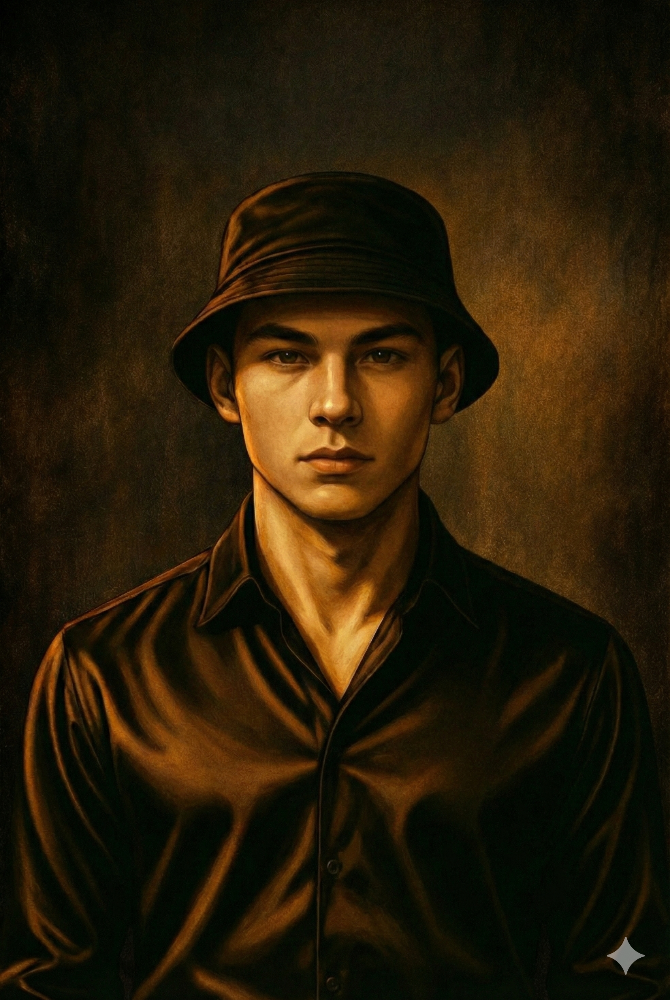
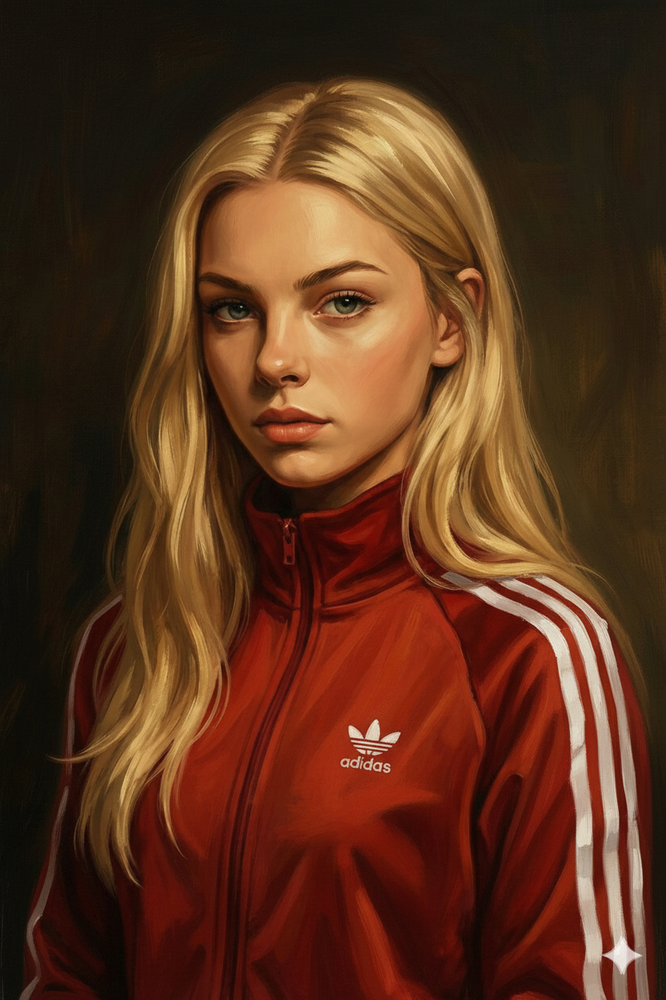
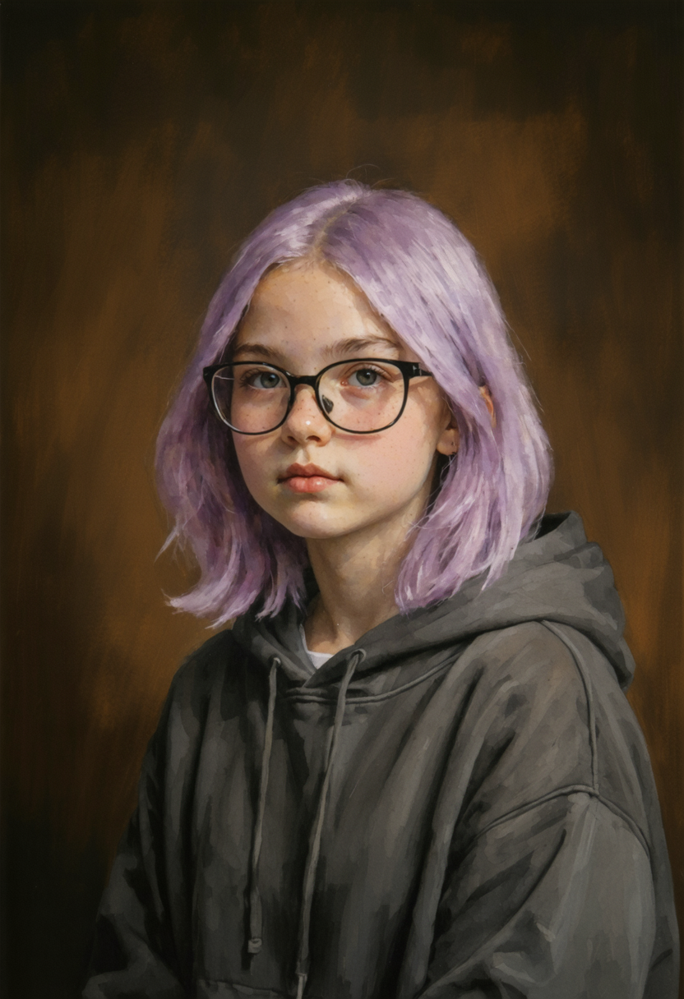
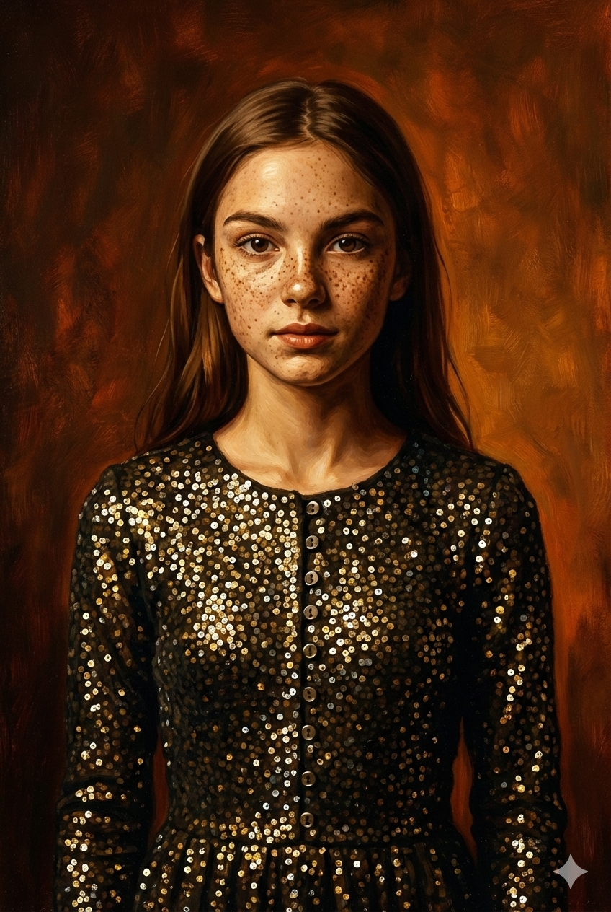

НАЖМИТЕ F11
ПОЛНОЭКРАННЫЙ РЕЖИМ
Раздел I
Глава 1. 💘 Amour
1/3 💎 Идеальный экземпляр
04.09.2019. Wednesday. Ассоциации
📓 Дневник Джессики
Школьный коридор. Пахнет свежей краской, пылью и сосательными леденцами со вкусом груши и барбариса. Вокруг шум и гам. Стою у доски расписания, ищу свой восьмой класс. Мелочь толкается и дышит в затылок. Хотя бы не задавили.
Опять урок в шестом кабинете. Придушить бы. А-а-а... Там старые неудобные стулья. Опять спина болеть будет.
Сзади кто-то орёт из младших:
— Миссис Андерсон, он мне портфель обрисовал!
Смешно. Не жалко. И бесит. Особенно этот пискливый голосок.
Позади слышу знакомый, почти родной голос. Как же я по нему соскучилась.
О да… Это ОН. Маска безразличия. Лицо? Расслабленное. Чёлка? Поправленная. Всё норм.
Поворачиваюсь.
Смотрю на него и краснею.
Солнце освещает его бронзовое лицо, будто лаская скулы. Аж блестит, гад. Короткая стрижка, чёлка уложена набок, виски выбриты подчистую. Рубашка с двумя расстёгнутыми верхними пуговицами, тёмные широкие джинсы, кроссовки, зашнурованные с идеальной симметричностью, серебряная цепочка на загорелой шее и классические часы на запястье. Всё идеально. Как по заказу. Упакуйте мне такого, пожалуйста. Даже двух: один — на выход, второй — для дома. Чтобы гладить, целовать… и, если что, придушить от любви. О да…
— Фрэн, привет, — делаю вид, что спокойна, но внутри вот прям… разрывает от счастья.
— Привет, — отвечает он, продолжая искать в расписании свой класс.
Глава 1. 💘 Amour
1/3 💎 Идеальный экземпляр
04.09.2019. Wednesday. Ассоциации
Щёки горят, улыбаюсь, а глаза — предательски светятся, безпощадно[*] выдавая меня. Маска безразличия слетела. Надеюсь, он не видит, как я превращаюсь в кашу из нервов и гормонов.
— Как дела?
— Нормально… Слышал, ты записалась на французский.
— Ага. Как и ты, — подмигнула ему.
Я знаю всё твоё расписание, дурачок. Я записалась на французский, потому что там будешь ТЫ.
— Зачем он тебе?
Эм… Зачем мне ещё этот ненужный французский? Что я вообще о нём знаю? Ладненько, нужно быстренько импровизировать.
— Ну, Париж, улитки, багеты, — перечисляла я и смеялась, глядя куда-то в потолок. — Знаешь... Марсельеза[*], романтика, улитки… Улитки, кстати, реально смешно.
Бли-и-и-н. Скажи что-нибудь нормальное, кроме этих улиток, идиотка!
— Есть ощущение, что впереди у тебя очень много работы.
— Согласна.
В этот момент кто-то из старших, проходя мимо, цепляет меня рюкзаком по плечу. Я пошатываюсь.
— Ай! — хмуро бросаю ему в спину. — Придурок!
Фрэнсис чуть дёргается:
— Всё окей?
Мы отошли в сторону к подоконнику. Вот от чего так несёт краской. Но уже засохло, так что норм.
Глава 1. 💘 Amour
1/3 💎 Идеальный экземпляр
04.09.2019. Wednesday. Ассоциации
— Тогда начнём срез знаний, — сказал он. — Что из перечисленного ты уже можешь сказать в оригинале?
— Ну, — протянула я, пытаясь не показаться тупой. — Paris… Romantic… и, конечно же, Amour.
— Неплохо. Но вот ассоциации, конечно, из ряда: London is the capital of Great Britain, — он хмыкнул.
— Ага. Так и живу. Ах, вот вспомнила! Ещё говорят, что там много геев, — говорю и тыкаю его локтем в бок. Нашла причину прикоснуться. Дотронуться. Потрогать. Вот прям… не могу без этого. И хочу ещё!!!
— На что ты намекаешь?.. — он прищурился.
— Просто надеюсь, что ты не гей. Хотя для них ты был бы реальным крашем[*].
Он смеётся. Звенит звонок на урок.
— Я — точно нет. А вот Билли...
— Ну и отлично! — Прикладываю руку к сердцу. — А то уровень моей тревожности мог резко подскочить.
— С тобой весело. — Он улыбнулся.
Да. Я такая одна. Да и ты тоже недалеко ушёл. Я тут изворачиваюсь как могу, а ты не замечаешь.
— А ты морозишься. Вокруг тебя одна девочка крутится…
— Какая девочка?
Бли-и-и-н... Зачем я это ляпнула?!
— Мне пора. Пока!
— Что?..
Мой девиз по жизни — делай ноги, когда сказала кринж[*]. Пусть теперь думает, что я имела в виду.
Глава 1. 💘 Amour
1/3 💎 Идеальный экземпляр
04.09.2019. Wednesday. Ассоциации
Сижу на каком-то уроке. Обдумываю наш разговор.
Французский — моё лучшее решение. Видеть его даже по субботам? Господи, я готова там ночевать. Держите меня! Жаль только, сидит не со мной, а со своим дружочком. Я бы уже давно положила руку на его бедро. Невинно. Так, чтобы привык. А потом — захват!!!
— Джесс! — толкает Диана локтем.
— А?
— Я тебе вопрос задала только что.
— Я думала... над уравнением.
— Мы на литературе.
— Ну и что? Тоже по-своему трагедия.
Сама тоже мечтаешь. Уверена в этом на двести процентов. Думаешь, не вижу, как ты сама пялилась на него в столовой?
В какой-то момент учительница упоминает, как главный герой романа попадает на приём к врачу. И у меня срабатывает флешбэк.
Стоп, Джесс!
Ловлю себя на мысли, что я совсем забыла о сеансах с психиатром. Мне ведь нужно стараться не думать о Фрэнсисе и избегать подобных разговоров на переменах. Сейчас понимаю, что более дурацких слов в этой жизни я ещё не слышала. Даже смешно становится. М-м-м… терапия, психиатричка, больничка — идите на х*й!
Глава 1. 💘 Amour
1/3 💎 Идеальный экземпляр
06.09.2019. Friday. Младшие и старшие
📓 Дневник Джессики
Сегодня я снова была самой ответственной старшей сестрой. После школы пришла забирать младших: Лею и Джорджа. Но похвалит ли меня мама? Вряд ли. Сидит дома. Могла бы и сама пройтись. Подработки сегодня не было. Почему сидим? Целлюлит растим?
Дети тусуются в песочнице, кидаются игрушками, визжат так, будто здесь реально решаются важные вопросы. Но как только я появилась — всё резко стихло. Чувствую, как пялятся с завистью: моих забирают первыми. А вы сидите дальше, жуйте свой песок!
Лея выбежала ко мне с лицом победителя, будто получила премию за самую классную сестру. Джордж возится у куличей, делая вид, что ему вообще всё равно. Но я-то знаю — просто не хочет показать, что рад меня видеть. Спустя полминуты детская гордость проиграла, и он лениво тащился мыть руки.
Мы собрались, я мило улыбнулась воспитательнице и вышла с младшими за территорию детского сада.
— Ладненько, взяли меня за руки! А то ещё какой-нибудь нарик[*] собьёт, — не удержалась от своей классической морали.
— Хэй, мы уже взрослые. Остынь! — сказал Джордж, пытаясь освободить свою ладонь.
— «Хэй», — передразнила я. — Какой дерзкий. От кого ты вообще это слово услышал?
Веду их по дорожке, чувствую себя героем боевика, который эвакуирует важных персон прямо из преисподней. На самом деле, конечно, всё гораздо банальнее. Обычная улочка, пахнет гарью, ветер шевелит волосы. В кармане спортивных штанов болтается телефон, а в голове — заевшая песня из ТикТока[*]: «Ту, ту, ту, ту…»
Глава 1. 💘 Amour
1/3 💎 Идеальный экземпляр
06.09.2019. Friday. Младшие и старшие
Иногда мне кажется, что быть старшей сестрой — всё равно что быть воспитателем, матерью и другом. Такой себе трансформер[*].
Держите меня!!!
Возвращаемся мимо школы, и я вижу Его, лениво закидывающего рюкзак на спину. Выходит из школы как раз тогда, когда мы уже идём все домой. Совпадение? К сожалению — да. Не могу удержаться.
— Привет, Фрэнсис Джексон! — я кивнула ему, и тут Джордж резко вырывает свою ладонь. — А ну взял меня снова за руку!
— Не буду! — огрызается Джордж.
— Привет, мамочка, — сказал он с улыбкой, подойдя ближе.
Сердце забилось сильнее. Сегодня он в толстом тёмном худи. Наверное, очень мягкое. Вот бы проверить. М-м-м…
— Одинокая. Сильная. Независимая, — ответила я, старательно пряча улыбку.
— А отец? — спрашивает Фрэнсис чуть тише, с какой-то взрослой ноткой.
— Алкаш, — вздохнула и покачала головой.
— Ну, надо было думать, с кем спать.
— А я не спала, — усмехнулась я. — Непорочное зачатие.
— Да ты прям Дева Мария, — восхитился он. Обожаю его чувство юмора.
Джордж сразу заулыбался, а Лея фыркнула:
— Это наша сестра, дядя. Мы домой идём!
— Не влезай! Тут взрослые общаются, — сказала я, фыркнув в ответ.
— А я хочу писать! — вдруг пожаловался Джордж, почесав себя меж ног.
— Ладно, пошёл я. — Фрэнсис подмигнул и сделал шаг назад. — А то он сейчас тут напрудит себе в штаны, а виноват буду я.
— Как же мне с вами «повезло»... — закатила я глаза.
Глава 1. 💘 Amour
1/3 💎 Идеальный экземпляр
06.09.2019. Friday. Младшие и старшие
По дороге домой я вся сияла, пока Лея вычитывала Джорджа и шла с надутыми губами. Братик защищал меня, а вот сестрёнка включила вторую мамку и ругала меня за то, что я заговорила с Фрэном. Мда, от младших не скроешь. Особенно от Леи, любительницы подслушивать и сунуть свой нос куда не просят.
— Мама, а Джессика снова виделась с Фрэнсисом, — сообщила младшая сразу же, когда вошли в дом.
Я офигела… Вот зараза малая!
— Что? — резко обернулась мама. — Тебе напомнить слова психиатра?
— Он сам подошёл, что мне нужно было делать? — отчиталась я. — Убегать как сумасшедшая?
— Не как сумасшедшая. Тебе объяснил специалист, что это болезнь.
— Мы парой слов перекинулись…
— Доктор сказала — никакого общения. Развернулась и ушла.
— Ах, значит, я совсем, по-твоему, чокнутая? — фыркнула я, хлопнув дверью. Косяк в коридоре чуть не отвалился.
— Джесси, не позорь меня! — сказала она, глядя на меня как на чужую. — Мы ходим в церковь и должны быть примером для других людей. Представь, как на нас будут смотреть, если узнают, что ты психически больная. Соседка опять скажет: «Зачем ты нарожала столько детей, если не можешь с ними справиться?»
Я не верила своим ушам. Не понимаю, почему я должна заботиться о том, что скажут какие-то бабушки? Ответа от меня не было.
Мама продолжила:
— Это ты сейчас так говоришь. А потом — клеймо на всю жизнь… Обо мне вообще начнут говорить, что только притворяюсь хорошей, а из-за моих грехов во какая напасть в тебя вцепилась.
Глава 1. 💘 Amour
1/3 💎 Идеальный экземпляр
06.09.2019. Friday. Младшие и старшие
Она швырнула полотенце на стол и со слезами побежала в ванную.
— Можешь так не переживать. Скажешь, что меня подкинули, а ты по доброте своей душевной приютила меня, как Моисея[*].
— Ну вот что ты мелешь, — уже всхлипывая, сказала она за дверью комнаты. — Я волнуюсь за тебя, а ты ёрничаешь. Уже не знаю, как на тебя повлиять.
Угу. И вместо того, чтобы меня поддержать, она сделала мою проблему своей обузой. Ведь важнее её репутация, чем мои чувства. Хорошо. Вижу, как ты волнуешься. Я запомнила.
🎧 Слушать Эрика Лундмоен — Яд
Spotify:
YouTube (полная версия):
Я пошла в комнату, закрылась, надела наушники, включила музыку, вскочила на кровать и начала кружиться. Мир в голове медленно расплывается, пока я не почувствовала, как падаю лицом в мягкое и безопасное — на подушки. Музыка спасала меня от этой чёртовой реальности, делая её хоть на минуту выносимой.
Глава 1. 💘 Amour
1/3 💎 Идеальный экземпляр
08.09.2019. Sunday. Первая неделя
📓 Дневник Джессики
Первая школьная неделя прошла без катастроф. Я выжила. Синдром отмены потихоньку ослабевал. А вчера я даже кайфанула от жизни.
🎧 Слушать Lana Del Rey — Young and Beautiful
Spotify:
YouTube (полная версия):
В субботу был первый французский. Препод — молодая, с серьгами-кольцами и фиолетовыми тенями. Хорошо, что она некрасивая — не придётся ревновать.
На занятии мы рассказывали о себе. Я подготовилась заранее: теперь Фрэнсис знает, что я обожаю клубничное мороженое, залипаю в сериалы, люблю длинные звонки, пошлый юмор и делаю кривые причёски сестре. Ещё сказала, что мечтаю стать фотомоделью. Так что пусть заходят на мою инсту[*] чаще.
О нём я и так всё знала: ходит в качалку, играет в баскетбол, фанатеет от мотоциклов, зависает с друзьями, начинающий фотограф (может, когда-то устроим фотосессию в стиле ню[*]), и мутит какой-то рендеринг[*] на компе. А ещё хочет сделать тату. Обалденно!
Весь урок я таращилась на его руки: эти вены, как корни деревьев из «Аватара»[*], оплели его предплечья, аккуратные крепкие пальцы, и то, как он ими держит ручку, заставляют меня потеть... Ох. Секси. Придуши меня ими! Прямо сейчас!!!
А после — мы стояли у выхода и болтали. Просто болтали. Шутили. Я снова «случайно» трогала его — то плечо, то руку, то щёчку. Потом извинялась. И снова трогала. Смеялась так громко. Как идиотка. Но такая счастливая ИДИОТКА.
Глава 1. 💘 Amour
1/3 💎 Идеальный экземпляр
08.09.2019. Sunday. Первая неделя
📓 Дневник Джессики
Вечером ему написала. Он ответил. Записывала кружочки[*], и он помогал мне с домашним заданием по алгебре. Мы переписывались до поздней ночи. А потом я не могла уснуть. Прокручивала наш разговор. Фантазировала, как бы мы могли остаться одни в кабинете… Мне бы никто не мешал.
В доме — идеальная тишина. Окно в моей комнате приоткрыто, и с улицы доносятся звуки ночных сверчков. Лежу под одеялом, смотрю его фотки в инсте, иногда поглядываю на звёздное небо. Экран телефона мигает в темноте, а я мысленно рисую нашу общую картинку.
Считаю время:
23:00.
00:28.
Задремала.
Где-то под утро, в 04:09, снова проснулась и опять думала только о нём. Я влюбляюсь ещё сильнее. Вот прям… каждый раз кажется, что сильнее нельзя, но я разбиваю этот миф. МОЖНО! Мой синдром поглощает меня, подчиняя себе мою душу. Или это и не болезнь, а просто настоящая любовь?..
Так я встретила рассвет — с ним в голове.
Глава 1. 💘 Amour
2/3 Психиатр и Батюшка
09.09.2019. Monday. Удар в пах
📓 Дневник Джессики
После нашей долгой переписки я ждала, что в школе он подойдёт ко мне первый. И даже, может, обнимет… Но нет. Полный игнор. С каждой переменой злилась всё больше, а девочки шептались, что у меня начались месячные. Как будто я — невидимка и исчерпала безплатный лимит внимания. Дальше только по подписке.
Ну ладненько…
После шестого урока я первая вылетела из кабинета и спустилась вниз к своему шкафчику. Взяла джинсовку, начала копаться в своей косметичке и тут:
«Хлоп»! Кто-то ударил меня по попе.
Я на рефлексе. Разворот. Удар с ноги — чётко в пах.
— Ай... бл*!
Это был Фрэнсис. Он согнулся пополам, корчась от боли.
Что же я наделала? Теперь он, может, больше не шлёпнет меня так. Бли-и-и-н.
— Господи! Джексон?! Я думала, это Саймон! Он всё время пристаёт. Извини!
Наклонилась к нему и начала гладить по плечу.
— Я просто хотел поздороваться… — прохрипел он, не разгибаясь.
Я чуть не лишила себя возможности иметь детей когда-нибудь от своего краша.
— Я в шоке. Реально не знала, что это ты… Пусть будет тебе за игнор!
— К тебе подходить опасно. Особенно сзади.
— Не опасно. Я хотела Саймону врезать. Правда, ему было бы не больно. Там всё равно между ног пусто.
— А ты проверяла? — попытался пошутить он, выпрямляясь.
— Не дай бог, — перекрестилась я.
Он наконец выпрямился, держась за дверку моего шкафчика, но уже улыбался. Нужно его удержать.
Глава 1. 💘 Amour
2/3 Психиатр и Батюшка
09.09.2019. Monday. Удар в пах
— Ты домой дойдёшь? — спросила я, кусая губу.
— Вызови такси. Или скорую, — изображая непрекращающуюся боль, сказал он.
— Ты же в пяти минутах от школы!
— Ну тогда — донеси меня на руках!
Хм. Спасибо за идею. Давно хотела, но сейчас прозвучит не палевно[*].
— Давай, я тебя лучше провожу, — сказала я.
— Не надо…
— А я и не спрашивала.
Он посмотрел на меня, чтобы ещё раз убедиться, что я не шучу.
— Ну, окей, раз это был не вопрос. Пошли!
Мы вышли вместе. Он чуть хромал, но мне кажется — уже симулировал. Всё сложилось лучше, чем начиналось. Плохого дня, как и не было. Главное, мы опять рядом.
Глава 1. 💘 Amour
2/3 Психиатр и Батюшка
09.09.2019. Monday. Чужая история
🌸 Редкий фрагмент из жизни Лилли
Учебный день окончен. Вышли из кабинета, сразу же запахло хлоркой, слышу, как плескается тряпка, уборщица уже наготовила ведро, чтобы вымыть пол и сбежать из этого дурдома. Я и Диана идём по коридору — вразвалочку, лениво, с телефонами в руках, обсуждая фотку подруги Дианы из инсты.
— Меня бы мама убила, если бы я выложила такую фотку, — сказала я, слегка мотая головой.
— Ну, у тебя не такие формы, как у неё, — хмыкнула Диана, поправляя заколку.
— Спасибо, подруга. Обняла.
— Да ладно тебе. Даже если бы были — ты бы всё равно не выложила.
— Потому что у меня ещё остался стыд.
— А может быть, в её теле ты бы думала иначе…
Мимо прошла завуч.
— До свидания, девочки, — кивнула она.
— До свидания, миссис Андерсон, — машинально откликнулась я.
Диана вдруг вцепилась мне в запястье.
— Смотри! — она указывает на окно заднего двора.
— Что там?
— Вон, слева. Парочка.
Я прищурилась. Джессика и Фрэнсис. Он чуть прихрамывал, она что-то ему говорила, размахивая руками, как будто доказывала что-то всей вселенной.
— Мама родная… — протянула я.
— Она его провожает?
Глава 1. 💘 Amour
2/3 Психиатр и Батюшка
09.09.2019. Monday. Чужая история
— За младшими, может, идёт?
— Они не в садике сегодня. Заболели.
Пауза.
Просто стоим, наблюдаем.
Джессика жестикулирует особенно экспрессивно.
— Хотя, если честно... — я чуть пожала плечами, — иногда её жаль.
— Джессику?
— Ага. Поначалу думала, что, как обычно, она просто выпендривается, но сейчас видно, как сильно в него вцепилась.
— Я думала, это закончится ещё в прошлом году, — бросила Диана.
— Похоже, что за лето её чувства только укрепились. И стелется теперь перед ним, как коврик. Ведь если не будет этого делать, то он её перестанет замечать.
Диана фыркнула:
— Найдёт себе кого-то постарше, и она успокоится.
— Может, тебя найдёт — ты же немного старше Джесси. Ей только в марте будет четырнадцать.
— Я за ним бегать не собираюсь. А с ней ему просто так удобно.
Снова пауза.
Фрэнсис копается в телефоне, словно уже и забыл, что стоит не один. Джессика поправляет волосы.
— Ты бы хотела, чтобы тебя вот так кто-то провожал домой после школы? — неожиданно сказала я каким-то опечаленным голосом.
— Не отказалась бы. А ты, вижу, хочешь.
— Не-е-е…
— Угу.
Глава 1. 💘 Amour
2/3 Психиатр и Батюшка
09.09.2019. Monday. Чужая история
— Диана. Не угукай. Я у тебя вообще-то спрашивала.
— Смотри, как она бесится, что он кому-то отвечает в телефоне. Даже губки утиные[*] скрутила, — сказала Диана, взяла меня за губы и начала сжимать их пальцами.
— И всё равно дальше стоит, — произнесла я странным голосом через её руку. — Терпит.
— А потом будет хвастаться, что он её провожал.
— Но она живёт в другой стороне.
— Провожал к садику, скажет, — махнула рукой Диана, пародируя Джессику. — Снова себя накрутит.
— Ну да, — тяжело вздохнула я, — там любовь в глазах смотрящей.
— Согласна. Сделай фото, пока они не исчезли, — кивнула Диана. — Скинем ей вечером, чтобы посмотрела на себя со стороны, как нелепо выглядит, и вбила себе в голову, что ему плевать на неё. Стоит, наверняка, другой отвечает.
Я подняла телефон, поймала ракурс, задержала дыхание.
Щёлк.
Фото получилось.
Как будто у всех своя драма, а у меня только экран с отражением чужой истории. И по итогу грустными из школы ушли не они, а я.
Глава 1. 💘 Amour
2/3 Психиатр и Батюшка
09.09.2019. Monday. На шаг ближе
📓 Дневник Джессики
Мы подошли к его дому. Мимо пролетает машина, подняв кучу пыли вокруг нас. Я бросила водителю вслед пару некрасивых слов — заслужил. Стоим. Откашливаемся.
— Спасибо, что проводила, — сказал он, слегка улыбаясь и поправляя ремешок рюкзака.
— Ты на меня не обижаешься?
Я смотрела на него снизу вверх.
— Да нет, сам виноват. Подкрался как идиот.
Сейчас бы его прижать к себе — и не отпускать. М-м-м… Но делаю вид, что вообще не об этом думаю.
— А я — каратистка от Бога, — усмехнулась я, ковыряя ногтем край рукава.
— Не сомневаюсь.
— Бросаем французский. Открываю свой кружок по карате. Первое занятие — удар в пах.
Рассмеялась так, что залаяла его собака во дворе.
— Ты страшная.
— В смысле — страшная?! — я надулась.
— В смысле — опасная. И симпатичная — для восьмиклассницы.
— Спасибо... Для одиннадцатиклассника — ты тоже ничего.
🎧 Слушать Lana Del Rey — High By The Beach
Spotify:
YouTube (полная версия):
Глава 1. 💘 Amour
2/3 Психиатр и Батюшка
09.09.2019. Monday. На шаг ближе
Он улыбнулся, но с места не сдвинулся. Намёк?
Я переминаюсь с ноги на ногу, будто тяну время. Сердце бешено колотится. Делаю шаг вперёд, будто сама себя подталкиваю.
— Ладно, я пойду, — говорит Фрэн и дальше стоит, словно провоцируя.
Я просто хочу его обнять. Даже поцеловать… Нет, не решусь. А вот обнять — могу.
Держите меня!!!
Медленно тянусь к Фрэну, опускаю глаза, раскрываю руки. Он обнимает в ответ, аккуратно кладёт свои большие ладони мне на талию. Его прикосновения как лихорадка — моментально поднимают жар в моём теле. Бабочки под кожей. Сердце кончается...
— Пока, — шепчу я, и не отпускаю.
— Пока, — отвечает он, чуть крепче сжимая мои плечи.
Шепчу ему на ухо:
— Если выбирать между «привет» и шлепком по заднице, то я выбираю второй вариант.
И, пока он не понял, как мне снесло крышу — включаю режим «беги, Джесси, беги»[*] — и лечу по улице.
А сердце всё равно остаётся ТАМ, у его дома.
Глава 1. 💘 Amour
2/3 Психиатр и Батюшка
12.09.2019. Thursday. Школьные выборы
🗝 Из истории Ричарда
На заднем дворе наша школьная беседка. Столик, две лавки и козырёк. Рядом клумбы, над которыми мы пахали летом, по асфальту носятся пятиклассники: орут, играют в догонялки, матерятся. Вспоминаю себя в молодости. А прошло-то всего два года. Осень тёплая, солнце бьёт в глаза даже через очки, птицы летают низко, как говорила бабушка: «Явно будет дождь».
Мои одноклассницы-семиклассницы Кейт и Мелисса зависают на лавке. Я тихонько уселся рядом. Мел дёргает шнурок на худи, Кейт листает ленту в телефоне.
— Как думаешь, кто-то проголосует за меня, если я выдвинусь? — спросила Мелисса.
— Конечно! Твой любимый Фрэнсис точно проголосует, — произнесла Кейт с издёвкой.
— Это не смешно! — надулась Мел и засунула руки в карманы. — Может, он тогда обратит на меня внимание…
— Да ты и так ему строчишь 24/7[*]. Он устал уже обращать на тебя внимание.
— Лол[*]! И не 24/7!
— Ага, сегодня ещё не успела?
— Я вообще-то здесь, — остановил их я, помахав рукой.
— Ричард! Ты чё, подслушиваешь? — возмутилась Кейт.
— Было бы что… — демонстративно закатил глаза. — Как обычно, говорите либо про Фрэнсиса, либо про Джона.
— Ну не о тебе же.
— Вот стану богатым — обо мне только и будете говорить.
— Как? Почку продашь? — усмехнулась Мелисса.
Глава 1. 💘 Amour
2/3 Психиатр и Батюшка
12.09.2019. Thursday. Школьные выборы
— Скучно с вами. Лучше пойду покажу пацанам, как дерутся настоящие мужики.
— А ты-то откуда знаешь, как мужики дерутся? — подколола Кейт.
— Значит, не пойду! Буду сидеть и вам мешать.
— Ой. Сиди. Нам фиолетово.
— Вон и Джексон ваш идёт, если что.
У Мисси сразу загорелись глаза, будто ей пирожок с маком купили.
— Мда, Мелиссы любимчик.
— И твой тоже.
— Мне больше Джон нравится.
— Не ори, он может услышать! — Мелисса сразу ныряет в телефон.
— Кстати…
— Только не вздумай… — шипит Мел сквозь зубы, но поздно.
— Привет, Фрэнсис! — машет рукой Кейт, чтобы он точно заметил.
Джексон разворачивается, кивает и подходит. Спокойный такой, будто не понимает, что тут сейчас будет шоу.
— Привет.
— А Мелисса хочет тебе кое-что сказать…
— Я тебя убью, — прошипела Мел.
— Ну? — Фрэнсис смотрит прямо на неё. — Я здесь. Говори.
— Ты будешь баллотироваться в президенты школы? — еле дыша, спросила она.
— Та мне пофиг на эти выборы. Я же в выпускном классе, — пожал плечами он.
— А вот Мелисса будет! — заявила Кейт и толкнула подругу в бок.
— Я ещё не решила.
Глава 1. 💘 Amour
2/3 Психиатр и Батюшка
12.09.2019. Thursday. Школьные выборы
— Удачи, если надумаешь! — сказал Фрэнсис и пошёл к школе, даже не дождавшись продолжения.
— А ты проголосуешь за меня? — бросает ему вслед.
— Посмотрим.
Мелисса ловит Кейт за рукав и впечатывает подзатыльник.
— Ты офигела?! Какой же это кринж. Только опозорила меня.
— Ой, тебе не привыкать.
— Подставлю тебя перед Джоном — посмотрю на твоё лицо!
— Я тебя прибью тогда!
Звенит звонок на урок. Двор начинает пустеть. Мелисса быстро схватила свою сумку и, не дождавшись подруги, пошла в школу.
— Помогла ей поговорить с Джексоном, а она ещё носом крутит, — оправдывалась Кейт, глядя то ли на меня, то ли просто говорила сама с собой. — Да и вообще — сама буду баллотироваться! И наберу больше голосов, чем она. Меня любят больше.
— Ты проиграешь.
— О, ты ещё здесь?.. Слушай, проголосуешь за меня?
— Звучит как бизнес-предложение. А взамен что?
— А что ты хочешь?
— Хм… десять баксов.
— Что? Иди ты на хрен!
— Ничего личного. Просто бизнес. Мне же нужен стартап[*].
Глава 1. 💘 Amour
2/3 Психиатр и Батюшка
14.09.2019. Saturday. 📋 Сеанс №6
📓 Дневник Джессики
Находясь в этом кабинете, чувствую себя реально больной. Потому что здесь ко мне относятся не как к обычной школьнице, а как к пациентке с серьёзной психической болезнью. Атмосфера давит сразу, как только переступаешь порог. Пациенты, которые здесь лежат, выглядят безжизненно, и складывается впечатление, что если сюда попасть, то это билет в одну сторону.
Совсем нет того вайба[*], как в фильме с Ди Каприо «Остров проклятых»[*]. Там была загадка, а здесь — всё очевидно. Отсутствие современного ремонта как бы слегка намекает тебе, что принципы лечения будут те же, что и при постройке этого здания: электротерапия, шоковая терапия и другие леденящие душу процедуры. Ха-ха, конечно. Но внутри реально создаётся ощущение медленно нарастающего угнетения. Тревожность поднимается. И на секунду даже теряю дар речи. А воздух в больничке шепчет: с тобой что-то не так. После такого хочется поскорее отсюда уйти. Боясь, что ты можешь заразиться. Хотя на меня уже так смотрят, будто я заразная.
Я сижу на мягком стуле — точно таком же, какие стоят у нас в кабинете истории. За окном шумит ветер, ветки то и дело стучат по стеклу, предвещая что-то зловещее. Женщина лет сорока пяти, в очках, сидит за рабочим столом. От неё веет приторными духами, которыми она тщетно пытается перебить въевшийся в одежду и кожу запах табака. Выражение лица её такое, будто я — невменяемая. Сейчас это вызывает улыбку. Но ещё два месяца назад мне было совсем не до смеха. В июле я погрузилась в жуткую депрессию от новости, что Фрэнсис нашёл себе девушку. И вот до чего довёл его необдуманный, глупый поступок.
Глава 1. 💘 Amour
2/3 Психиатр и Батюшка
14.09.2019. Saturday. 📋 Сеанс №6
С тех пор мой диагноз сменялся несколько раз, прежде чем ему дали точное определение: депрессия, пограничка[*], и, наконец, — синдром Адели[*]. Врач сообщила маме, что такой диагноз не ставится, однако после нескольких бесед со мной она была настолько уверена в нём, что не побоялась рискнуть своей репутацией, ведь видит во мне какую-то мономанию[*].
— Ранее ты жаловалась на тошноту и головные боли. Я тебе назначила СИОЗС[*], у которых побочные эффекты менее выражены, чем у прошлых препаратов. Расскажи, как себя чувствуешь сейчас? — спросила она профессиональным строгим голосом, быстро окинув взглядом мою историю болезни.
Я замялась. Пожала плечами.
— Я перестала их принимать. Фрэнсис же расстался с Альбой, я говорила вам по телефону. Вот уже как три недели без препаратов. Мне хорошо.
Она вскинула брови, будто я пригласила её сегодня на свой творческий вечер, посвящённый самоубийству… Повод для депрессии исчез. Что её так удивило?
— Ты понимаешь, что нельзя бросать медикаментозное лечение сразу же, как только тебе кажется, что стало легче? — сказала она немного раздражённым тоном и сняла уродливые очки. Затем продолжила мягче: — Это отличные препараты, Джессика. Тебе они нужны не только в момент самой депрессии. Они — твоя подушка безопасности.
— Но причины для депрессии больше нет. Они же расстались. Всё чудесно, — натянуто улыбнулась я, выпрямив немного спину.
— А если завтра они снова сойдутся? — она снова подняла брови, как и голос. — Что, если у него появится другая девушка? — и уши. — А если он просто смеётся над тобой?
Глава 1. 💘 Amour
2/3 Психиатр и Батюшка
14.09.2019. Saturday. 📋 Сеанс №6
Я перебила, не могла больше слушать вымышленные «если» этой психиатрички:
— Этого не будет. Он хороший и не смеётся надо мной.
В кабинет вошла девушка в белом.
Пауза.
Положила какие-то документы на стол и ушла. Появилось немного времени передохнуть от такого психологического напора. Психиатр отвлеклась, словно забыв обо мне, так резко сменилось её выражение лица. Но перерыв был небольшой, и вернулась она не одна, а с напряжением на красном лице.
— Дорогая, неужели ты хочешь лечь к нам в стационар[*]? — она звучала спокойно, но как скрытый способ запугать добрым голосом, а ещё это похоже на отточенный вариант манипуляции.
— Нет, — покивала я, глотнув ком в горле, взявшийся ниоткуда.
Ветки деревьев ударили по окну сильнее обычного, я немного вздрогнула. Согнула спину, словно пыталась защититься от чего-то невидимого, к тому же здесь было прохладно. Она вздохнула и посмотрела на книжный шкаф за моей спиной, потом откашлялась. Словно готовилась что-то сказать.
Ты можешь говорить, что хочешь, умная тётя. Я люблю. А ты куришь. Мы обе делаем то, что нас убивает. Но у тебя больше шансов заболеть раком лёгких от своей вредной привычки, чем у меня лечь в дурку[*]. Так что пока ты не бросишь курить, вряд ли сможешь стать для меня примером.
— Ты с ним общаешься? Переписываешься?.. Только честно! — она посмотрела так пристально, что я почувствовала себя крошечной букашечкой.
Если скажу правду, мама снова заберёт телефон. И все мои вечера пройдут без возможности ему написать. Вместо этого придётся веселить Лею и Джорджа. Только не это.
Глава 1. 💘 Amour
2/3 Психиатр и Батюшка
14.09.2019. Saturday. 📋 Сеанс №6
— На переменах, если случайно увидимся. Привет и пока, — прозвучало из моих уст уверенно и сухо. — И если сам подойдёт.
— Хорошо, Джесси. Небольшой прогресс, — произнесла врач, кивнув, и тут же внесла записи на компьютер.
Да уж, прогресс. Для тебя?.. А давайте сделаем из меня не только больную, но и отшельницу. Что мне теперь, совсем ни с кем не общаться?
— Ты нашла себе хобби, как мы обсуждали на прошлой терапии, чтобы отвлекаться? — продолжила допрос.
— Конечно. Я учу французский. Даже записалась к репетитору, который приходит в школу, — постаралась звучать уверенно, поправив волосы.
— Прекрасно, — снова записала, быстро стуча по клавиатуре. — И как успехи?
— Сложно, но интересно.
— Это только к вашему классу приходит или общие занятия?
По ладоням выступил пот. Щёки вспыхнули. Правда или ложь? Это она может проверить у мамы. Поэтому лгать опасно.
— Общие, — ответила я тише обычного.
— Угу, — протянула она с подозрением и взяла в руки карандаш. — А Фрэнсис тоже посещает занятия?
Сука. Как она это делает? А-а-а… Ненавижу!
— Да... Он готовится к экзаменам. Ему нужен французский. Отличник же. Хочет поступить в престижный универ, — протараторила я, пытаясь показать, что это не проблема.
Доктор скривилась, уронила карандаш на стол и сцепила руки в замок. Словно её пазл сложился[*]. Она нагнулась немного вперёд. Все её действия вызвали у меня рвотные позывы.
Глава 1. 💘 Amour
2/3 Психиатр и Батюшка
14.09.2019. Saturday. 📋 Сеанс №6
— Хорошо, Джессика. А теперь позови свою маму и подожди за дверью.
Я встала, подыграла ей, а именно: сделала вид, что всё ок, и вышла в коридор.
Ждала маму минут пятнадцать, уткнувшись в телефон, параллельно проверяя чужие сторис[*].
🎧 Слушать Lana Del Rey — Dark Paradise
Spotify:
YouTube (полная версия):
Через несколько минут мама вышла из кабинета — лицо перекошено, глаза сверкают.
— Всё норм? — осторожно спросила я.
Мама молчала секунду, потом — бац! — ударила меня сумкой.
— Никакого французского! — прорычала она. — Ты сказала, что нужно подтянуть язык, а не чтобы сидеть рядом с ним!
— Конечно, — вскрикнула я, как очевидное. — Я бы не пошла туда, если бы не он. Фрэнсис — моя мотивация. Он делает меня только лучше.
Мама вдруг встала на колени и начала молиться, не замечая меня.
Стыд и позор.
Я быстро спускалась по лестнице, чтобы выбежать на улицу.
Господи, ну пожалуйста, сделай так, чтобы мы с Фрэнсисом были вместе. Мне с ним так хорошо. Он — идеальная пара для меня. И не слушай маму. Она просто поверила в чушь этой психиатрички-манипуляторши.
Прошу!
Глава 1. 💘 Amour
2/3 Психиатр и Батюшка
15.09.2019. Sunday. Неугодная молитва
📓 Дневник Джессики
На следующий день мама в приказном порядке потащила меня в церковь. Не удивительно. Теперь ей казалось, что в меня вселился бес, потому что я, в отличие от неё и «чудесной» Леи, нерегулярно посещаю церковь.
Мне нравились церковные службы, честно. Разговоры с батюшкой и запах ладана[*] — во всём этом была своя уникальная атмосфера. Тёплая, домашняя, уютная. Единственный минус — это ранние подъёмы, от которых хочется на выходных отдохнуть.
— Ты подготовилась к исповеди?
— Да, мама, я написала всё на листочке, — ответила я, закатав глаза.
Тащилась, держа за руку сонного Джорджа.
— Надеюсь, там упоминается твоё враньё.
— На первых строчках…
— Только не дерзи мне! — пригрозила, а потом снова начала монолог с Богом. — Ну вот почему у неё такой характер тяжёлый? В кого она такая пошла?!
Да в тебя же и пошла. Хватит уже говорить в голос сама с собой. А то я решу, что дурдом — это по наследству.
Мы вошли на территорию церкви и, «о чудо», я не упала и не начала биться в конвульсиях, как одержимая, а перекрестилась и поклонилась. Мама сделала всё то же самое, но только на коленях, вымазавшись с головы до ног.
Служба прошла хорошо. Я исповедалась[*] и причастилась[*]. Мама с небольшим облегчением выдохнула и поставила огромную свечку за моё здоровье.
Глава 1. 💘 Amour
2/3 Психиатр и Батюшка
15.09.2019. Sunday. Неугодная молитва
Мучает ли меня совесть?.. Наверное, да. Я ведь соврала на исповеди. Точнее, не всё упомянула. Я знала, что мама хорошо общается с батюшкой, поэтому боялась сказать лишнее. Я знаю, что Господь видит мою искреннюю любовь к Фрэнсису и понимает меня как никто другой. Он услышит меня, и Джексон одумается. Ведь быть со мной — лучший вариант. Никто так им не дорожит, как я, и никогда не будет.
Мама выждала отца Бернарда и начала ему плакаться. Он молча кивал, утешительно гладил её по плечу, успокаивал как мог, говоря, что «на всё воля Божия». Я решила подойти к своей любимой иконе святой великомученицы Екатерины[*] и попросить лично у неё, чтобы она умолила Бога за мои отношения с Фрэнсисом. Поцеловав икону, я увидела боковым зрением, что ко мне идёт отец Бернард.
— Привет, моя умница, как твои дела? — приобнял он меня по-отечески и чмокнул в голову. От его тела исходило приятное тепло, в котором хотелось раствориться. А его рука, которая касалась моего плеча, словно могла защитить от всего зла в этом мире. Отец Бернард был высоким, плотным мужчиной, с густой бородой и громким угрюмым голосом, что никак не сочеталось с его характером и добротой.
— Отлично, батюшка. А у вас как?
— Ой, старею, — посмеялся он. — Как школа? Как успехи?
— Хорошо, школа на месте, учусь.
— Принимаешь антидепрессанты, которые выписала врач?
Ясно. Уже знает, что нет. Ладненько…
— Мне намного лучше. Я здорова. Правда.
— Это хорошо, что лучше, но я вам посоветовал отличного специалиста. Лучшего во всей стране. Если она говорит, что нужно принимать, то — делай, как говорят, — сказал он строго, но с любовью.
Глава 1. 💘 Amour
2/3 Психиатр и Батюшка
15.09.2019. Sunday. Неугодная молитва
Угу, в стране, как ещё не во вселенной? А в созвездии Кассиопеи[*] она тоже номер один?
От раздражения большим пальцем чуть не сорвала наращённый ноготь на среднем.
— Разве любовь нужно лечить таблетками?
— Любовь — нет. А вот нездоровую привязанность, которая мешает тебе в твоей учёбе, молитве и повседневных делах — да. Более того, даже среди святых были врачи. Поэтому не обманывай и лечись. Хорошо?
Я немного натянуто улыбнулась и обняла его. Отрицание резало мою душу. Я не хотела пить таблетки. И не считала, что это нездоровая привязанность. А моя молитва будет посильнее многих. Ведь я обращаюсь с самым чистым и искренним сердцем.
Глава 1. 💘 Amour
3/3 Оставьте всё вот так
17.09.2019. Tuesday. Поклонник
📓 Дневник Джессики
На зарубежной литературе к нам подсадили десятиклассников. Училка Шэрон Сандерс куда-то ушла. Дала задания и испарилась. В классе сразу начался базар-вокзал. Душно, пахнет то ли мокрыми подмышками, то ли дешёвым дезодорантом. Одна Лилли пытается что-то читать, остальные — забили.
Саймон и его дружок Фред клеятся к Диане, пытаясь потрогать её с разных сторон. Она хихикает и доказывает ещё раз, что тоже не святая. Я включаю камеру. Они меня снимали с Лилли, теперь я буду снимать Диану. Да и на этих двух придурков с десятого компромат мне не помешает.
Вдруг Фред резко вырывает из рук мой телефон.
— Эй, отдай!
Я вскочила. Он хочет, чтобы я за ним гонялась.
— Да я просто посмотрю, чё тут у тебя, — ржёт он и пятится к двери.
— Верни, скотина! — визжу я, чувствуя, что щёки уже горят.
Он листает галерею. Фоток там больше тысячи, и, к счастью, почти все безобидные. Вовремя почистила все скрины[*] переписок с Фрэнсисом и его фотки, перед тем как ехать в Престон к психиатричке.
Я бросаюсь — он уворачивается, я хватаю — он ускользает. Он жмёт на экран.
Нет!!! Только не эту фотку, где я кривляюсь.
— Я сейчас реально буду плакать! — заорала я, тяжело дыша.
Фред вдруг замирает, смотрит на меня, и в нём словно что-то стреляет. Он протягивает мне телефон, пытаясь скрыть неловкость после взгляда мне в глаза.
— Ничего интересного, — пожал он плечами. — Ни одной фотки в ванной. Я разочарован.
Глава 1. 💘 Amour
3/3 Оставьте всё вот так
17.09.2019. Tuesday. Поклонник
— А ты с чего взял, что они должны быть?
— Не знаю. Все девчонки так делают.
— Не все. Я — не делаю. Я же не какая-то шлюха.
Отвернулась, а он хмыкнул. Меня это взбесило.
— Жаль. У тебя, наверно, получилось бы красиво, — подмигнул он.
— Ты мерзкий, — буркнула я, убирая телефон.
— Ага. Но симпатичный.
— Мечтатель, — фыркнула я, обидевшись на него.
— И у меня к тебе дело.
— Какое ещё?
— Проведу тебя домой. За моральный ущерб.
— Ага, проведёшь. Только если хочешь, чтобы я тебя тоже ударила — как Фрэнсиса.
— Мне нравится риск, — хмыкнул он и распрямил спину. — И я не Фрэнсис…
Он хотел как-то оскорбить его, но побоялся. И правильно сделал. Пусть завидует молча.
Ладненько, получилось так, что домой мы шли втроём: я, Саймон и Фред, который так того хотел. Компашка мечты. Как будто мне уже тридцать пять, рядом двое детей и кризис женщины среднего возраста.
Фред где-то нарвал букетик из опавших листьев, вручил мне, будто вручает «Оскар»[*].
— Это чтобы загладить вину, — торжественно сказал он.
— Можешь им подтереться, — сладко улыбнулась я.
Глава 1. 💘 Amour
3/3 Оставьте всё вот так
17.09.2019. Tuesday. Поклонник
Он бросил его под ноги и растоптал.
Стало как-то неловко. Он смотрел, будто надеялся — вдруг хоть чуть-чуть зацепил меня. И это было грустно. Фред чуть сжал губы и отвёл взгляд — на секунду стал настоящим, без понтов.
Какой-то приступ совести, но я его жалеть не собираюсь. И не хочу, чтобы жалели меня.
Честно, он мне не нужен. Это его проблема, что он влюбился. Никаких шансов.
А Фрэнсис должен знать: я не просто одна из. Я — конфетка, но не для всех. Пусть подумает, что у него не только фан-клуб, но и конкуренты. И пускай теперь сам понервничает: вдруг меня заберут?
Глава 1. 💘 Amour
3/3 Оставьте всё вот так
17.09.2019. Tuesday. Никакой ревности
📓 Дневник Джессики
Вечером я снова написала Фрэнсису. Опять. Ну а что? Он тоже пишет. Иногда. А значит — почти взаимно.
📱 INSTAGRAM DIRECT
Сегодня после школы меня домой провожали два старшеклассника.
21:45 | fran.jackson
Два?
Серьёзно?
21:46 | jess.angel
Ага.
Один из них даже вручил мне букет.
21:46 | fran.jackson
Цветы?
21:46 | jess.angel
Из опавших листьев, но всё равно романтично, нет?
21:47 | fran.jackson
Ну, звучит… осенне.
...Осенне?
Придушила бы его. Где ревность? Где «а кто они такие?» Где паника?!
Ну ты даёшь. Даже не напрягся.
21:49 | fran.jackson
Завтра подерусь с ними)
Ха-ха.
Шутишь?
21:51 | fran.jackson
Да
21:52 | jess.angel
Блин.
А я думала, ты серьёзно.
Я скучаю по тебе…
А ты?
21:53 | fran.jackson
По себе?
Я себя каждый день вижу.
21:54 | jess.angel
По мне, придурок!
Извини.
21:54 | fran.jackson
Скучаю по алгебре, как когда-то мы её решали по телефону.
Что-то в этой фразе было... милым. Странным. Но милым. Словно он бросил мне спасательный круг, но это был просто сучок.
Окей. Звони, раз скучаешь.
Порешаем ещё раз.
Глава 1. 💘 Amour
3/3 Оставьте всё вот так
17.09.2019. Tuesday. Никакой ревности
Я положила телефон. Смотрела на экран. Секунда. Другая.
И вдруг — звонок. Как будто услышал не пальцами, а сердцем.
Мы болтали полтора часа. Про школу. Про еду. Про музыку. Я спрашивала — он отвечал. Я ржала — он тоже. Мы были как два идиота в параллельных мирах, но на одной частоте. И я, конечно, рассказала, что одному из этих парней — Фреду — я вроде как нравлюсь.
Он выдал: «Ну… ты многим можешь нравиться».
Вот и всё. Ни одной эмоции. Ни намёка на ревность. Ни «держись от него подальше».
Счастлива, что поговорила с ним, хоть и шёпотом, чтобы не слышала мама. Но и расстроена, что он так отстранённо себя ведёт.
Ладно. Я же не сдаюсь.
Глава 1. 💘 Amour
3/3 Оставьте всё вот так
20.09.2019. Friday. Мокрая
📓 Дневник Джессики
Стою в туалете, набираю воду в ржавое ведро, чтобы помыть пол в нашем кабинете. Лилли тем временем подметала. Я никуда не спешу.
Ведро уже полное, даже хлещет через бортики. Потому что я задумалась и забыла прикрутить кран. Я подношу его к краю раковины — аккуратно, почти как хирург. И, конечно же, задеваю дном.
Шлёп.
Вода выплескивается прямо на меня.
— Бл*!.. — зашипела я, прижав руки к мокрой юбке. Холодно. И мерзко. И тупо.
Дверь скрипнула.
— Всё нормально? — заглядывает Фрэнсис. — Услышал твой крик и не удивился. С тобой вечно что-то случается.
— Я… мокрая, — пробормотала я, глядя на себя. Вода стекает по ногам, будто я попала под дождь в школьной форме.
— Мокрая девочка? — усмехнулся он, не особо скрывая взгляд. — Горячо.
Мои щёки, наверное, вспыхнули. Как будто это не просто слова.
— Тогда надо облиться ещё, — произнесла я и плеснула ещё.
— Не надо, заболеешь, — он шагнул ближе. — Давай помогу донести.
— Какой ты заботливый. Прям джентльмен.
Он берёт ведро. Я смотрю на его руки. Почему даже когда он просто несёт ведро — это выглядит как сцена из романтического фильма? Камера крупным планом, замедление, фоновый трек.
Заходим в мой кабинет.
Глава 1. 💘 Amour
3/3 Оставьте всё вот так
20.09.2019. Friday. Мокрая
— Где тебя носит? — ворчит Лилли у доски. — Я уже всё сделала, между прочим.
— Облилась, — пожала я плечами. — А Фрэнсис меня спас.
— Мамочки… — закатала она глаза.
Он молча ставит ведро у доски.
— Привет, — кинула Лилли.
— Привет, — ответил он.
— Я ухожу. Завтра куча заданий.
— Пока. Уходи с Богом, — не оборачиваясь, говорю ей, сдерживая улыбку.
У Фрэнсиса звонит телефон, он берёт трубку и выходит за ней. Дверь закрылась.
…
Как быстро я осталась одна. С грязным полом. С осенью за окном. И с желанием проконтролировать Фрэнсиса, чтобы он вернулся после звонка ко мне.
Но я включила гордость. Где я её нашла — не знаю. Где выключается — тоже.
Дверь снова скрипнула.
Это не он. Бл-и-и-и-н!
— О, сидит одна-одинёшенька, — ехидничает Саймон. В своём любимом растянутом свитере и с выражением «я здесь как дома». Самодовольный до зубовного скрежета.
— Ты чего ещё не ушёл?
— Я думал, вместе пойдём.
— Только если пол вымоешь.
— Может, сразу массаж тебе сделать?
— Только попробуй, — пригрозила я, замахнувшись шваброй.
Глава 1. 💘 Amour
3/3 Оставьте всё вот так
20.09.2019. Friday. Мокрая
— Спокойно. Я и не собирался. Но пол — это уже слишком.
— Тогда катись домой.
— С радостью.
— Ну?
— Стою. Думал, ты полюбовнее попросишь.
И тут — спасение. Дверь открывается снова. Фрэнсис.
— Что вы тут орёте? — спросил он, глядя на нас.
— Да она хочет, чтоб я пол за неё мыл, — пожаловался Саймон, как ребёнок на перемене.
— Я и сама справлюсь! — выпалила я.
— Всё, всё, ухожу, не мешаю, — буркнул Саймон и вышел.
🎧 Слушать Ben Howard — Promise
Spotify:
YouTube (полная версия):
Мы остались вдвоём.
Фрэн подошёл ближе. Посмотрел в глаза.
— Почему ты нервничаешь?
Я не ответила. Просто подошла и обняла его. Молча.
Села на парту, обвила руками и ногами, прижалась щекой к его груди. Мне нужны эти моменты больше, чем хорошие оценки.
Вот так обалденно.
Он стоит. Не дёргается. Просто держит.
Его пальцы медленно гладят моё плечо. Не спеша. Словно утешает, даже не зная от чего.
Глава 1. 💘 Amour
3/3 Оставьте всё вот так
20.09.2019. Friday. Мокрая
М-м-м…
Мне хорошо. Спокойно. Тихо.
Я обвиваю его руками, поглаживаю шею.
А ногами, в тонких колготках, будто вплетаюсь в него ещё сильнее.
Вот прям… настолько вау.
Вдыхаю запах его духов. Чувствую биение его сердца.
Так не хочется, чтобы кто-то вошёл и всё испортил.
Я обнимаю его крепче, словно пытаясь остановить время.
Его футболка пахнет порошком. И этим запахом можно дышать вечно.
С улицы доносится гудок автобуса. Я не отреагировала.
Он берёт меня за руку и садится на стул за первую парту.
Я подалась к нему. И… свернулась клубочком.
Просто лежу у него на руках, на коленях…
И в этот миг мне показалось, что я наконец-то дышу после долгой паузы.
Глава 1. 💘 Amour
3/3 Оставьте всё вот так
24.09.2019. Tuesday. Собственный голос
📔 Из блокнота Мелиссы
Ну что ж… на школьных выборах победила Лилли. Камон[*]! Конечно. Кто бы сомневался. Отличница, любимица, милашка. У неё друзей — полшколы. И даже мисс Андерсон всех агитировала за неё.
А Мелисса? А что я?
У меня голос был один. И то — собственный.
— Вот скажи мне, почему за Лилли проголосовало полшколы, а за меня — я одна? — бомбила я, влетая с Кейт на второй этаж.
— Ну… Она умная, ответственная, у неё хорошие оценки… — говорила Кейт, плетясь позади.
— То есть я тупая, безответственная и вообще мусор?
— Ой, я не это имела в виду…
— Знаешь, что бесит больше всего? Что даже мои друзья проголосовали не за меня! Камон!
— Может, потому что они… ну… голосовали за меня?
Я остановилась прямо перед ней, и она врезалась грудью мне в нос. Ну вот, ещё я и низкая, как куст. Кринж.
— Что? Ты тоже баллотировалась? Меня в школе не было всего два дня.
— Вот я и сказала всем, что тебя нет — голосуйте за меня. Ты будешь не против.
— Лол. А у меня спросить? Скажи, что это рофл[*].
В руках крепко сжимала кейс от наушников. Надеюсь, он достаточно прочный, чтобы выдержать мой гнев.
— Это правда. Прости… или не прощай — я бы всё равно так сделала.
Глава 1. 💘 Amour
3/3 Оставьте всё вот так
24.09.2019. Tuesday. Собственный голос
Я быстро начала идти прямо. Она меня пытается остановить.
— Ну, мы же всё равно подруги, правда же? Мелисса! Стой!
Я встала. Замерла. Медленно оборачиваюсь.
— Я просто… подумала, что шансов у тебя маловато… — якобы с сожалением сказала Кейт.
— Вот и подруга. Спасибо, блин.
Пауза. Я кипела. Она смотрит на меня, как кот из «Шрэка»[*]. Знает, на что надавить.
— Я не думала, что для тебя это так важно.
— Ладно, это полбеды. Главное — за кого голосовал Фрэнсис? — спросила я, выдыхая. Всё равно уже ничего не изменить.
И тут, как чёрт из табакерки[*]:
— Та ему пофиг, — буркнул Ричард, выползая из-за угла.
— Ты снова подслушивал?!
— Я рядом шёл! Ты вообще замечаешь хоть кого-то, кроме своего Джексона?
— Кто это? — спросила Кейт.
— Я вообще-то ваш одноклассник.
— Ты ростом ниже, чем я, — бросила ему я. — Пятиклассники на первом этаже.
— И мне тоже тринадцать, если что, как и тебе. А вот Кейт всё ещё одиннадцать.
— Я хоть и младше вас, зато выгляжу вдвое старше, — сказала Кейт.
— Вот когда мне подарят на день рождения телефон последней модели, ты заговоришь по-другому.
Глава 1. 💘 Amour
3/3 Оставьте всё вот так
24.09.2019. Tuesday. Собственный голос
— Какой? Андроид[*]?! Пф, тоже мне — телефон, — прыснула я.
— Если ты и разбогатеешь когда-то, то я первая тебя заблокирую, — не отставала Кейт.
— Завидуйте молча, — пожал плечами он, резко сверяя что-то в телефоне. — Вон твой Фрэнсис стоит. И, кстати…
Он вдруг резко наклонился ко мне, и я едва не шлёпнула его локтем. Шепчет:
— Сейчас он трогает Джессику за жопу.
— ЧЕГО?! — у меня аж голос сорвался. — Где?
Он указывает вниз по лестнице. Я, как дура, резко поворачиваю голову. И да — вижу. Джессика хихикает. Фрэнсис что-то ей говорит, наклоняется ближе. Его рука — на уровне спины. Может, чуть ниже. Может. А может, и нет.
— Вот… — прошипела я, пытаясь найти оскорбления, но не смогла.
— Если хочешь, я могу потрогать тебя. Для равновесия, — выдал Ричард с каменным лицом.
— Свали, извращенец! — выплюнула я, чувствуя, как внутри всё сжимается.
— Ты лох, Ричи, — добавила Кейт, скрестив руки и усмехнувшись.
— Это потому, что я бедный? — он развёл руками.
— Это потому, что ты противный.
Иду быстро. Почти бегом. Словно могла убежать от этого... ощущения. Внутри — как будто раздербанили диван и оставили одни пружины. Жёсткие. Скрипучие. И с дырой посередине.
Я влетаю в класс. Сажусь. Нет, швыряюсь. Рюкзак — на стул рядом. Никто сюда не сядет. Или не так. Пусть садится рядом тот, кто за меня проголосовал.
Не могу в это поверить. Камон. Один голос…
Глава 1. 💘 Amour
3/3 Оставьте всё вот так
27.09.2019. Friday. …под деревом
📓 Дневник Джессики
Вообще, вести дневник — это было одно из домашних заданий психиатрички. Но вместо того, чтобы ежедневно записывать рефлексию по поводу своего состояния, я превратила его в кое-что большее, в кое-что личное. И вести его каждый день мне слишком лень. Поэтому пока вот так. Скачками.
А потом — пятница.
Геометрия. Шестой урок. Голова раскалывается. Словно кто-то изнутри долбит молотком по вискам. Я встаю. Подхожу к классной руководительнице Монике. Ей тридцать, она молодая и сильно отличается от древних учителей по типу миссис Паттерсон. Между собой мы зовём её по имени. Моника нас очень любит, а мы любим её в ответ.
— Можно мне домой?..
Она внимательно смотрит и потом кивает.
— Ты как привидение, иди.
— Спасибо за комплимент.
Я выхожу из кабинета. Телефон в руке, пальцы дрожат. Хочется просто лечь где-нибудь и не вставать. Набираю маму. И в этот момент — бах. Телефон вылетает и шлёпается на плитку.
Какая же я неуклюжая. Руки затряслись так, словно кто-то выбил из них телефон.
— Бл*... — сглатываю. — Это было стекло?..
Внизу, возле учительской, стояли одиннадцатиклассники. Фрэнсис видит, что это мой телефон, и поднимает. Смотрит. Молчит.
— Это было стекло?.. — повторяю ещё раз.
— Если бы его не было — тогда фиаско[*].
Спускаюсь к нему и забираю этот кусок побитого хлама.
Глава 1. 💘 Amour
3/3 Оставьте всё вот так
27.09.2019. Friday. …под деревом
— Я домой отпросилась. Мне очень плохо. Пока, — говорю ему и иду к своему шкафчику.
Надеваю кожанку, перед зеркалом делаю хвост, туго затягивая резинкой, и вижу, как он подходит сзади.
— Захотел второй урок карате?
— Угу. Но на втором уроке теперь я тебя провожу.
— Ого, неожиданно. А у тебя что, все уроки закончились?
— Физик заболел, а следующий — физ-ра. Мы решили не ждать её.
🎧 Слушать Cigarettes After Sex — Apocalypse
Spotify:
YouTube (полная версия):
Фрэнсис пошёл со мной. Кажется, мои попытки его соблазнить начинают работать. Во время дороги домой я очень близко к нему прислонялась, почти наступая ему на ноги. Такое тепло… Хотя ветер прохладный, воздух влажный, противный. Листья шлёпаются по кроссовкам, прилипая к подошве.
Он подаёт мне руку, чтобы я перепрыгнула лужу. Держит бережно за пальцы, и я прыгаю. Смеюсь. Смотрю ему в карие, добрые глаза. А когда нам попалась очень большая лужа — он просто взял меня на руки и перенёс.
Мелочь. А я хотела расплакаться. И — расплакалась. Сказала, что из-за боли в голове. Наврала. Но он ничего не сказал. Просто остановился... и поцеловал в лоб. А потом поставил на асфальт. И вроде бы стою. И вроде бы парю над ним. Оставьте всё вот так.
Я взяла его за руку, и мы молча пошли к повороту на мою улицу. Дальше нельзя. Вдруг увидит мама.
Я остановилась. Он — тоже. Стоим под большим деревом. Сильный, холодный ветер. С ветвей срываются капли. Мы ёжимся, глядя друг на друга.
Глава 1. 💘 Amour
3/3 Оставьте всё вот так
27.09.2019. Friday. …под деревом
Дышим в такт. Фрэнсис чуть наклоняется и…
Целует меня. В губы. Медленно. Нежно.
Это был наш первый поцелуй. В этом году. В этой жизни. В этой вселенной.
На душе становится не просто светло. Все самые тёмные уголки меня теперь превратились в отдельные галактики. Так сильно они преисполнились жизнью. Это было лучше любых антидепрессантов в мире. А потом — луч света сквозь чёрные облака, словно он пришёл изнутри. Как будто даже небо решило: «Ладно, девочка, вот тебе момент счастья. Лови, пока не убежал».
И снова чёрные густые тени. Гром.
Я обняла его за шею. Прильнула ближе. Вцепилась со всей силы, чтобы хотя бы физически показать, как мне не хочется его отпускать. Вот прям… настолько сильно.
Он отстранился. Улыбнулся. Я прижала палец к губам.
— Иди. А то дождь снова начнётся, и ты намокнешь.
— Хорошо, — сказал он. И ушёл. Просто… ушёл.
А я осталась. Под деревом. Голова болит, а сердце радуется.
Дует сильный ветер. Холодные капли продолжают падать мне за шиворот. И я счастливая, с пульсом под тысячу, ощущаю этот дискомфорт, как ребёнок в пелёнках, который крепко скован, но эти оковы — его дом. Его безопасность. Его жизнь.
Но где-то глубоко… будто царапнулось что-то. Я не знаю — радость это была или тревога. Но мысль, что это и всё… меня пугала.
Я пропустила эти мысли и собиралась двигаться дальше, навстречу своей мечте, забив на все слова мамы, батюшки и психиатра. Как же они ошибаются. Я ему нравлюсь, и, возможно, он тоже в меня влюбился.
Идеально!
Глава 1. 💘 Amour
3/3 Оставьте всё вот так
30.09.2019. Monday
📓 Дневник Джессики
Я ждала, что он оглянется тогда.
Не оглянулся.
Я снова хочу большего.
Знаю.
Глава 1. 💘 Amour
3/3 Оставьте всё вот так
Последняя запись за сентябрь
📓 Дневник Джессики
У меня не просто бабочки в животе[*]. Там зоопарк с каруселью.
И, наверное, я впервые в жизни по-настоящему поцеловалась.
И вряд ли когда-то ещё в моей жизни будет чувство сильнее этого.
Но даже он — для меня теперь не ответ.
Я так сильно хотела… хоть на миг заглянуть в его голову. Узнать, что он сейчас чувствует. Что думает. Хоть что-нибудь.
Потому что я всё сильнее понимаю: я люблю его слишком. А он, может, просто даже не осознаёт, насколько стал моим всем.
Я всё ещё держу пальцы на его губах. Чтобы ещё раз к ним прикоснуться…
Глава 2. На грани
1/4 🍊 Мандарин
30.09.2019. Monday. Буратино
📓 Дневник Джессики
Он всё-таки заболел. Пожертвовал собой, когда нёс меня на руках по холодным лужам. У Фрэна обнаружили пневмонию и положили в больницу. Мне так хотелось к нему… приехать, пожалеть, обнять, даже если бы сама заболела. Но мама меня не отпустит ни под каким предлогом. Я пыталась придумать что-то внятное, но без шансов.
В школе объявили, что двадцать пятого октября будет осенний бал[*]. Из каждого класса нужно по паре. Конечно же, я согласилась. Хотела, чтобы на меня смотрел Фрэнсис, как я танцую с другим, и ревновал. Но вот мой партнёр — сплошное несчастье. Чарли.
Господи, какой он деревянный. Двигается, как будто его оживили минуту назад. Если бы завтра снимали фильм про Буратино[*] — я бы отправила его на кастинг. Он кладёт руки мне на талию, как будто собирался схватить картошку в супермаркете, и постоянно наступает мне на ноги. Я же крутилась, как могла, стараясь не споткнуться о его неуклюжие движения.
А взгляд Фрэнсиса, которого здесь не было, я чувствовала. Хотела чувствовать. Хотела, чтобы он смотрел. И жалел, что можно танцевать только с девочками своего класса.
Репетировали мы танец и конкурсы, которые там будут, на физкультуре или истории. Моника часто позволяла заниматься всякой фигнёй на своих уроках. Всё-таки классный руководитель. И за это мы её обожаем.
Глава 2. На грани
1/4 🍊 Мандарин
01.10.2019. Tuesday. Витаминка
Ⓕ Из воспоминаний Фрэнсиса
Я лежу на койке, уткнувшись щекой в подушку. За окном потемнело давным-давно. Думаю, что уже наступила ночь. Или всё ещё тянулся вечер?.. Температура прыгала то под сорок, то опускалась чуть ниже. А в голове всё плавало, будто ты под водой, и кто-то включил музыку в другом мире.
Общая палата на троих, но пока — я один. Пахнет больницей и сыростью. Ну, больничный запах — его тяжело описать, каждый его понимает на подсознательном уровне. А сырость всегда была неотъемлемой её частью. По крайней мере, нашей старой больницы. «Отличная атмосфера, чтобы выздороветь». Надеюсь, не подхвачу грибковую инфекцию.
У окна стоит старая тумбочка. Криво прикрытая занавеска слегка колышется от сквозняка. На столике лежит одинокий мандарин, «Парацетамол»[*], баночка с витаминами и тетрадь, в которую я ничего не писал.
🎧 Слушать Тима Белорусских — Витаминка
Spotify:
YouTube (полная версия):
Свет от уличного фонаря ложился на серую простыню, будто кто-то забыл выключить луну. Глаза так болят от температуры, что плавятся, глядя на экран телефона. Я не писал ей весь день. Не потому, что не хотел. Просто… всё плыло.
Телефон завибрировал. Думаю, это она.
Глава 2. На грани
1/4 🍊 Мандарин
01.10.2019. Tuesday. Витаминка
📱 INSTAGRAM DIRECT
Ты не отвечаешь
Я переживаю
Можешь просто смайл кинуть, если живой?
22:06 | fran.jackson
Живой
Почти
22:06 | jess.angel
Фрэн…
Это всё я
Дождь, ветер, и я такая: давай, неси меня
А теперь ты лежишь в больнице
Чувствую себя виноватой
22:08 | fran.jackson
Не говори ерунду
Я хотел тебя проводить
И провёл
У тебя болела голова
Я волновался
А потом…
Нужно было дома отогреться, а я ещё холодный душ принял
22:08 | jess.angel
Я скучаю
В школе всё какое-то тухлое
Даже никто не шипперит[*] нас.
Всё. Трагедия.
22:10 | fran.jackson
Мне тоже не хватает
Твоего смеха по коридору
Твоих якобы случайных касаний
По приколам, которые понимаешь только ты
22:11 | jess.angel
М-м-м
Я раскраснелась
Хочу тебя поскорее увидеть
22:13 | fran.jackson
Я бы сейчас тоже не отказался тебя видеть
Ты бы, наверное, заставила меня улыбнуться
22:13 | jess.angel
Конечно
22:17 | fran.jackson
📷 Фото [деревяная тумбочка, на ней: мандарин, стакан воды, шторы, фонарь за окном]
Вот мой вайб
Палата люкс[*]
22:18 | jess.angel
О, шик!
А мандарин — это символ одиночества или символ верности?
Если второе — я приторможу страдать, так уж и быть
22:19 | fran.jackson
Символ нашего общения
Он, как и ты, не спускает с меня глаз
Иногда даже кажется, что внутри него камера
Главное — поправиться
А ты не скучай
И не вини себя
Мне правда приятно, что ты рядом
Пусть и в телефоне
22:38 | jess.angel
А чтобы ты выздоравливал быстрее…
Вот тебе витаминка-Джессика 😇
Только не урони телефон от жара
📷 Самоуничтожающееся фото [ванная в тёплых тонах, на краю раковины — свеча, в кадре — бёдра и попа в тоненьких трусиках с надписью «angel» на резинке. Лица нет. Стоит спиной. Белые волосы кончиками нежно касаются прогнутой поясницы. В отражении — только свет.]
22:41 | fran.jackson
…
Я сейчас реально умер.
Врач, кажется, слышал мой выдох.
Можно я это поставлю на заставку?
22:43 | jess.angel
Теперь настроение лучше?
Надеюсь, ты не успел сделать скрин
22:44 | fran.jackson
Клянусь своим мандарином.
Не успел.
И спасибо.
Это было лучше, чем все мои витамины
Глава 2. На грани
1/4 🍊 Мандарин
01.10.2019. Tuesday. Витаминка
Какая же она красотка. Как градусник: вроде прикладываешь к сердцу, чтобы проверить температуру, а она её поднимает. Если бы она была старше… В десятом классе одна девочка, как и в моём. Ну, не очень. В девятом все какие-то странные. Либо характер ужасный, либо внешне не очень. Либо просто не в моём вкусе. Вот и остаётся — Джессика.
Глава 2. На грани
1/4 🍊 Мандарин
02.10.2019. Wednesday. Замена
📓 Дневник Джессики
После сеанса у психиатра мама стала раздражённой, как истеричка. Ведь она якобы опозорилась перед врачом. И считала нужным контролировать мой приём антидепрессантов. Причём такая идея пришла ей только на прошлой неделе. Теперь каждое моё утро начиналось с того, что мама стояла над душой и смотрела, как я запихиваю в себя препараты.
У меня после их приёма начиналась тахикардия[*], усиливалась головная боль первое время, появлялся лишний вес. Я приседаю не для того, чтобы Фрэнсис посмотрел на меня и увидел жир, а не упругую попку. Зато сон стал такой, словно мне выпускали пулю в лоб, как только я касалась подушки. И сонливость преследовала меня на протяжении всего дня. Ещё недавно жизнерадостная Джессика превращалась в помятый старый овощ. Мне такой расклад не нравится.
После нашей переписки и его приятной реакции на моё горячее фото я убедилась, что выгляжу горячо. Ему нравится моё тело, нравится моя энергия, нравится моя дерзость. А эти таблетки убивают мои лучшие качества, делая меня безжизненной, апатичной и некрасивой. Они убивают меня. ПОРА ЭТО ПРЕКРАЩАТЬ! Ладненько… Я решила снова схитрить.
Ночь. В доме тишина. А значит — время действовать. Я аккуратно откидываю толстое одеяло, без скрипа слезаю с кровати и беру из своей тумбочки заранее приготовленные таблетки цитрамона[*]. Высыпаю их в карман и на цыпочках выхожу из своей спальни. Двери на кухню открыты. Намёк? Знак?
Вошла. Пахнет сырниками. В животе забурчало. Прекрати! Сейчас не до этого! Я поставила стул, поднялась на него. Нащупываю в темноте опору и благодаря лунному свету достаю с верхней полки коробку с медикаментами. Здесь, в баночке, и были мои антидепрессанты, которые выписывались по рецепту моего психиатра. Откручиваю крышку баночки. Замираю. Прислушиваюсь, не идёт ли кто попить воды.
Глава 2. На грани
1/4 🍊 Мандарин
02.10.2019. Wednesday. Замена
Всё спокойно. Сердце колотится от адреналина. Я высыпаю препараты в правый карман, до последней таблетки, а потом достаю из левого — цитрамон, кладу на дно ватку, чтобы не цокало по дну, и засыпаю свою подмену. Уж лучше я буду пить таблетки от головной боли, чем эту дрянь, которая замедляет время. Хочу выглядеть нормально, а не заторможенным экспонатом.
Баночку ставлю на место, тихо закрываю дверцы, возвращаю стул на место и иду в туалет. Там я высыпала из кармана антидепрессанты в унитаз, стянула трусики до коленок и с улыбкой до ушей пописала на них. Прощай, сумасшедшая жизнь! И всё смыла.
Глава 2. На грани
1/4 🍊 Мандарин
03.10.2019. Thursday. Агилера
Ⓕ Из воспоминаний Фрэнсиса
Лежу на спине в полудрёме, уставившись в жёлтое пятно на потолке. Где-то капало. То ли кран, то ли крыша. Температура вроде спадала, но в теле всё ещё было липко, будто под кожей медленно плавился лёд. Пахнет неприятно. Хочется уже домой, принять душ и лечь на свой удобный диван.
Я знал, что со мной будет кто-то ещё — «общая палата», классика. Но был уверен, что сегодня останусь один. Облом.
Скрипнула дверь. Шаги. Вторые. Голос медсестры и чей-то знакомый смех. Я приподнялся на локтях, медленно, чтобы не закружилась голова. И чуть не выронил дыхание. Сердце ёкнуло. В голове пролетает куча воспоминаний.
— Агилера[*]? — голос у меня сорвался, будто не разговаривал лет сто.
— Ого, какие люди — Джексон, — она улыбнулась и чуть наклонила голову. — Вот уж не думала, что свидимся в такой романтической обстановке.
Моя бывшая. Одна из первых, которая видела преображение семиклассника «Джекси» в того Джексона, кем я являюсь сейчас. Но об этом я расскажу как-то в другой раз.
Раньше мы с ней хорошо общались, но учёба в разных школах повлияла на наши отношения. А может, зря? Я вижу ту же улыбку, только сейчас она ярче. Ту же осанку, только стройнее. И даже волосы, собранные кое-как, выглядят небрежно-красиво. Словно она даже болеет с грацией. Теперь Агилера не просто красивая — она выросла. И стала девушкой, которая даже с температурой обладает какой-то зрелостью. Фигура просто огонь. Раньше она была милой, фигуристой, игривой, как… как… Джессика?
Фух. Как холодный душ после всего первого школьного месяца. Ей же, кстати, через пару дней семнадцать лет должно быть, если моя башка правильно помнит.
Глава 2. На грани
1/4 🍊 Мандарин
03.10.2019. Thursday. Агилера
— А я даже рада, что тебя встретила, — говорила она, усаживаясь на свою койку. — Думала, что со скуки здесь подохну. Но в инсте недавно видела, что ты фотографом заделался. Так что можно будет фотосессию безплатную по старой дружбе, правда?
— Ну так, фоткаю для себя. Не людей — пейзажи.
— Значит, не пофоткаешь меня?
— Можно попробовать, только на телефон. Фотик дома.
— Окей. Дело же не в инструменте, а в том, кто за этим инструментом?
— Учитывая мою фантазию, я могу это воспринять двусмысленно, — сказал я и чё-то раскраснелся.
— Ну и выдумщик же ты. Только мне себя в порядок нужно привести.
— Ты как себя чувствуешь?
— Прекрасно. 39,5 вчера было. Сегодня уже — 38. Так что иду на поправку.
— Ты изменилась. Хотя ты и так была ничего.
— Спасибо, ты тоже изменился.
— В какую сторону?
— В странную, — она усмехнулась. — Но это не плохо. Странное — это ты.
Я посмотрел на неё. Она облокотилась на подушку, достала из рюкзака бутылку воды, сделала глоток. Мы рассмеялись. И смех какой-то... другой. Не как с Джессикой. Легче, что ли. Без этого вечного напряга. От этой мысли улыбка сама сползла с лица. Как будто боялся, что если позволю себе больше, то сразу предам. Но когда она нагнулась, почувствовал смущение. И сразу же — чувство вины. Словно посмотрел не туда — и тебя уже судят. Хотя мы всё ещё на разных кроватях.
Фух. Температура снова подскочила.
Глава 2. На грани
1/4 🍊 Мандарин
04.10.2019 – 07.10.2019. Другая реальность
Ⓕ Из воспоминаний Фрэнсиса
С Агилерой легко. Она не смотрит на меня одержимым взглядом. Ведь я — обычный человек, а не идеал, каким рисует меня Джессика, Дженнифер или кто-то ещё. Может, потому что она не соревнуется за меня?
Она читала мне вслух то, что попадалось ей в рекомендациях. Какие-то тупые фанфики[*] на известные манги[*], рецепты куриных бульонов и гороскопы, которые, кажется, она выдумывала на ходу. А я лежал и слушал. Местами даже кайфовал.
— Напомни, а ты кто по знаку зодиака? — спросила она без всякого смущения, что не помнит дату моего ДР.
— Козерог.
— О-о-о. Звучит катастрофически печально.
— Чего это?
— Ну, Козероги — это рэд-флаг[*].
— Какой ещё рэд-флаг? Я же не бык.
— Бычок сексуальный. Хах. Тебе бы подошло.
— Ха-ха-ха. Что?
— Итак, КОЗЕРОГИ. Прогноз на шестое октября, — сказала Агилера дикторским голосом и встала в центр кровати.
— Не верю, но то, что ты вста…
— Не перебивай! — перебила она.
— Окей, — недовольно протянул я.
— «Козерогов ожидает тяжёлый день. Учитывая их скупость на эмоции, они упрямо продолжают сидеть на своей койке, уткнувшись в странную игру, и не хотят фотографировать обаятельных и обворожительных Весов».
Глава 2. На грани
1/4 🍊 Мандарин
04.10.2019 – 07.10.2019. Другая реальность
— Какой-то бред.
— Ну не скажи. А как по мне — пока совпадает на 100%, — произнесла она, глядя в телефон.
— Это всё?
— Нет. «Козероги ужасно эгоцентричны и не замечают никого вокруг себя. Им кажется, что они — центр галактики, вокруг которых вращается куча мелких планет».
Я перебил:
— Всё они замечают. Центром галактики, знаешь ли, тоже непросто быть.
— Да расслабься, — хихикнула она. — Я специально, чтобы тебя подразнить.
Агилера вскочила с кровати, схватила соседнюю подушку и начала меня душить. Мы подурачились немного, и она вернулась на свою койку.
Иногда смотрел, как она дремлет, отвернувшись к стене. Тёплая. Настоящая. Не могу насмотреться на неё и привыкнуть к её новому образу. Сейчас Агилера выглядела как взрослая девушка, которая знает, чего хочет. И вроде бы хотела общаться со мной.
А телефон всё мигал.
📱 INSTAGRAM DIRECT
Как ты?
15:27 | jess.angel
Выздоравливаешь?
16:13 | jess.angel
Уроки опять сдохли без тебя.
Глава 2. На грани
1/4 🍊 Мандарин
04.10.2019 – 07.10.2019. Другая реальность
Я отвечал. Односложно. Смайлами. Иногда — позже, чем хотел. Иногда — не так, как надо. Иногда — вовсе забывал.
Мне было стыдно. Но тут — совсем другая реальность. Какая-то простая. Без игр и фальши. Я был в одной комнате с той, кто смотрит на тебя, будто ты не популярность города, которого все хотят, а обычный парень.
Мне впервые понравилось болеть…
Я знал, что меня в любом случае осудят. Но когда вокруг тебя так много людей, складывается впечатление, что им уже нужен не ты — а их победа. Так что я ещё не знал, на чьей я стороне.
Телефон мигнул снова.
Я не ответил. Я просто включил музыку в наушниках и отвернулся.
🎧 Слушать Eminem — Beautiful
Spotify:
YouTube (полная версия):
Какой-то тильт[*]. Почему я повёлся на её игры? Теперь я точно знаю, что мне нравятся девочки постарше. Но нравлюсь ли им я? Может, я только краш для малолеток?
Глава 2. На грани
1/4 🍊 Мандарин
07–08.10.2019. Monday–Tuesday. Поздравление
Ⓕ Из воспоминаний Фрэнсиса
Мы долго сидели в телефонах, пока время не перевалило за двенадцать. В палате пахнет лекарствами и мятными конфетами Агилеры, которыми она хрустела полдня. Аг лежит на боку, уткнувшись в экран телефона. Свет освещает её красивое пухленькое лицо, которое то и дело улыбается. Волосы растрёпаны, и эта неряшливость выглядит так, будто ей не нужно стараться. Настолько она настоящая.
🎧 Слушать Laura Branigan — Self Control
Spotify:
YouTube (полная версия):
— Ты что-то странно на меня смотришь, — сказала она, заметив мой взгляд.
— Потому что наступило восьмое число, — ответил ей и смущённо улыбнулся. — С днём рождения, Аг.
Она замерла, а потом медленно повернулась ко мне — будто не ожидала, что я не забуду.
— Даже не напоминала… — прошептала. — А ты всё равно помнишь.
— Не хочу хвастаться, но я увидел у тебя в сторис пару минут назад скрин поздравления. Это подтвердило мою память.
Пауза.
— Какой ты быстрый. И подарок будет?
Тут она поймала меня врасплох. Я потянулся к тумбочке. Просветил фонариком. Внутри — пусто. Конечно. Только мандарин одиноко лежит за дверцей, не видя, как я общаюсь с Агилерой. Нет. Его ей не отдам. Сверху на тумбочке банка витаминов.
— Ну-у-у… если ты не против витаминов...
Глава 2. На грани
1/4 🍊 Мандарин
07–08.10.2019. Monday–Tuesday. Поздравление
Она хмыкнула, откинулась на подушку и, не глядя, бросила:
— Ладно. Вчера вечером мы классно пофоткались. Это ты уже сделал. Тогда… — она приложила палец к подбородку. — О, поздравь меня по-настоящему.
— В смысле?
— Поцелуй, — уверенно выпалила Аг.
— Серьёзно?..
— Расслабься. Просто в щёку. По-дружески. Не драматизируй.
Секунда. Другая. Я посмотрел в потолок. Подумал о Джессике. О нашем поцелуе под деревом. О её словах. О том, как она писала «ты не отвечаешь», как переживала. Как скидывала фото с надписью «angel».
Желудок агрессивно сжался.
— Только в щёку, — повторил я, уточняя.
Она молча кивнула. Я встаю с койки и иду к ней. Медленно. Будто каждое движение нужно было обосновывать самому себе. Она уселась на кровать, спиной прислонившись к стене.
Сел рядом. Сделал вдох. От неё пахнет очень приятно. Очень. Такая сладкая…
Коснулся губами её кожи на щеке. Тёплая. Чистая. Ощутил, как она легко при этом улыбалась. Словно прикоснулся к прошлому. Или к будущему, в котором меня никто не будет судить?
Отстранился. Аг всё ещё молчала. Я опустил глаза, а внутри — будто задел грань. И не был уверен, что не перешёл её.
Агилера видела мою борьбу и давить не стала. Просто взяла телефон и сделала вид, что так и дальше сидела, отвечая на поздравления.
Глава 2. На грани
1/4 🍊 Мандарин
09–10.10.2019. Wednesday–Thursday. Возвращение
Ⓕ Из воспоминаний Фрэнсиса
Ощущения, когда идёшь в школу после долгого отсутствия, такие, словно ты сейчас войдёшь и никто тебя уже не помнит. В моём случае, может, я бы даже и обрадовался.
Шёл по коридору, когда увидел, как Джессика на другом конце резко застыла. Её глаза расширились, будто она увидела призрака. Секунда. Она роняет сумку и бежит прямо ко мне.
— Фрэ-э-э-э-э-н!!! — голос перекрыл всё остальное.
Широкие, косолапые, милые шаги, серые глазки, чёлка, которая ей так идёт. Всё это двигалось с огромной скоростью в моём направлении. Я не успел ничего сказать — она буквально впрыгнула мне на руки, вцепилась ногами, руками, щекой в плечо. Как будто я вернулся из командировки[*]. Как будто без меня всё это время она не дышала.
Я чуть пошатнулся — сил ещё не набрал, но устоял. Потому что именно в этот момент понял: я вернулся. Не просто в школу. А в нашу реальность. Где есть она. Со своим светом, запахом, блёстками на щеках и привычкой хватать за шею, когда обнимает.
— Ты даже не представляешь… — шептала она. — Я думала, с ума сойду тут без тебя… думала, ты умер… — она не отпускала.
— Прекрати, я же тут, — прошептал я. — Целый. Почти.
Мимо проходит Моника, закатывает глаза. Осуждающе, с презрением глянула на Джессику, которая просто себя не контролировала.
Глава 2. На грани
1/4 🍊 Мандарин
09–10.10.2019. Wednesday–Thursday. Возвращение
Я попытался выкинуть Агилеру из головы, как будто нашей палаты и не было. Эти два дня Джессика была рядом всегда. Каждую перемену. Каждую паузу между уроками. Засыпала вопросами, дурачилась, хихикала, словно заново вспоминала, как быть счастливой. Однако память — вещь упрямая. Моментами что-то всплывало, как сон, которого ты не помнил утром, но вспомнил вечером. Интересно, как бы Агилера себя повела в этом случае? — подумал я. Когда Джессика дёргала меня за рукав, вспоминал, как та поправляла волосы. Когда она смотрела на меня, я чувствовал разницу между этими разными мирами.
Но здесь — только Джессика. Она в этой школе всегда рядом. И я вернулся — к ней. Как будто никогда не уходил. Как будто всё это время просто приснилось. Я в её мире. Где главная — ОНА.
Сейчас я понимаю, что меня подкупали её комплименты, хотя тогда отрицал это. Я чётко понимал свои границы[*], но когда слишком близко к ним подходил, то всё размывалось. И вот я уже иду за ней. Провожаю. Целую. Хрен знает, почему. Наверное, просто потому что… мог.
Но разве не я главный в этом мире?
Глава 2. На грани
2/4 Анекдот
11.10.2019. Friday. Неофициальные отношения
📙 Из блокнота Джулии
— Девочки! — я влетела в кабинет биологии, едва не снесла чей-то стул. — Я только что такое видела…
— Мы тебя слушаем, — протянула Мелисса, вальяжно дожёвывая пирожок с маком.
— Я иду в туалет по своим делам. Захожу… — запнулась, потому что самой не верилось. — А там… Фрэнсис. И Джессика. Целуются взасос.
— Ты точно видела? Или тебе как обычно показалось? — уточнила Хлоя, приподнимая бровь.
— Эй, Хлоя. Я не выдумываю. Дверь кабинки была приоткрыта. Они, видимо, не заметили… или забыли закрыть. Короче, я захожу — и БАЦ. Они в обнимку. У Джексона рука в её волосах, а Джессика вцепилась в его рубашку. Я и писять перехотела. Чуть не поскользнулась на месте. Развернулась и свалила. Придётся идти на улицу.
Мелисса поперхнулась. Ричард на задней парте так широко раскрыл рот, что чуть не уронил телефон, когда его задела Кейт, подбегая к нам.
— Чё, прям сосутся? — спросил он с неожиданным интересом, щурясь.
— Ага. Я в ступоре стояла. Как будто… они давно вместе. Только никто нам не говорил.
— А они типа обязаны всем чё-то говорить? — закатила глаза Хлоя.
— Я до сих пор в шоке, — буркнула я.
— Ушла на самом интересном, — хмыкнул Ричард, и по его лицу расползлась та самая ухмылка.
— Так сходи сам, раз так хочется.
— Та не. Не хочу мешать. Пацанская солидарность. Может, у них уже перепихон там.
Глава 2. На грани
2/4 Анекдот
11.10.2019. Friday. Неофициальные отношения
— Ей ещё тринадцать, Ричард, — резко осадила его Мелисса.
— Ну, выглядит она на пятнадцать. И, зная Джессику, она бы не отказалась, — пожал он плечами, будто бы говорил о рецепте салата.
— Откуда ты там знаешь.
— Поверь. Знаю больше, чем вы. И лучше бы на его месте оказался я. Я бы её любил. Гладил бы её. Целовал бы в сисю… — мечтал Ричи.
— Фу. Блин. Завидуй молча, — оборвала его я.
— Кринжа навалил, — сказала Мелисса.
— Тебе же Мэйв нравилась, — вставила Кейт.
— Ну это другое. Вы не поняли. Если бы у меня была такая как Джессика, я бы её ценил сильнее, чем Джексон.
Ричард что-то там говорил, но его уже никто не слушал.
До конца дня об этом знали почти все. Случайно стала зачинщиком слухов. Ой. Сорян[*]. Но, похоже, Фрэнсису и Джессике было вообще не до этого. На переменах — вместе. На обеде — вместе. В коридоре — в обнимку. Я даже немного завидовала. Это же так круто, когда есть с кем позажиматься. Даже в туалете. И им было плевать. Официально это или нет. Важно было только одно.
Что им кайфово.
Глава 2. На грани
2/4 Анекдот
11.10.2019. Friday. Дженнифер
📓 Дневник Джессики
Ладненько… поправила юбку, рубашку, волосы. Готова.
Мы вышли из туалета в коридор как ни в чём не бывало. Взяли портфель и сумку и подошли к подоконнику. Солнечный луч бил в пыльные стёкла, заставляя аллергиков чихать и краснеть. Посмотрели друг на друга и громко рассмеялись, вспоминая, что мы творили минуту ранее.
🎧 Слушать Lana Del Rey — Blue Jeans
Spotify:
YouTube (полная версия):
Неподалёку от нас, возле кабинета химии, устроили базар-вокзал девятиклассники. Я их недолюбливала. Мальчики какие-то грубые и неинтересные. А девочки — даже хочется вытереть руки салфетками, когда случайно в столовой касаешься их. Особенно не любила одну — чрезвычайно противную сучку, которая настырно пыталась понравиться Фрэнсису. Ей пятнадцать. Она высокая, как уличный фонарь, худая, как палка, и просто мерзко милая. Вместо того чтобы ей врезать, когда она приближается к моему Фрэнсису, я неестественно улыбаюсь, как околдованная. И мы театрально начинаем изображать подруг, пока Фрэн не отвернётся. Бе-е-е. Зовут её…
Дженнифер.
И, по моим данным, запала на Фрэнсиса раньше всех. Но, как видите, шансов ей это не прибавило.
Нам было плевать, что кто-то мог нас увидеть. Ну как нам… Особенно мне. Я решила обнять его ещё раз перед тем, как идти на урок. Ведь звонок был пять минут назад. Я закрыла глаза, вдыхая его запах, и на секунду мне показалось, что мир сжался до глухого пульса в висках. Вокруг никого, только мы. Но потом почувствовала на себе чей-то взгляд. Тяжёлый, острый, как жало пчелы.
Глава 2. На грани
2/4 Анекдот
11.10.2019. Friday. Дженнифер
Открыла глаза и увидела её. Дженни. Стоит в компании своих одноклассниц в паре метров от нас, прислонившись к стене, и смотрит. В её глазах… что там? Ярость? Зависть? Желание? Всё сразу. Её обычно милое личико сейчас искажено. Знаете, когда ты улыбаешься, но видно, как тебе грустно. Вот ОНО. И в этот момент я почувствовала странное удовлетворение. Да, Фрэнсис мой. Намёк понят?.. Она ничего не может с этим поделать. Антидепрессанты хоть и прибавили мне в своё время лишнего веса, но и благодаря этому у меня подросла грудь. Красивая и упругая. А вот у неё там — ровно и гладко, как у пацана. Так что пусть завидует дальше.
Он опустил мне ладони на попу, и гештальт[*] закрылся. Идеально.
Глава 2. На грани
2/4 Анекдот
12.10.2019. Saturday. 📋 Сеанс №7
📓 Дневник Джессики
Прошёл месяц с момента, когда я последний раз была на терапии и в церкви. Вместо очных встреч я несколько раз созванивалась с доктором по телефону. Такая была договорённость, если у мамы не будет возможности возить меня по субботам в Престон. Я принимала якобы «антидепрессанты» и говорила, что контакты с Фрэнсисом свелись к минимуму. Я также подтянула свои оценки в школе и стала идеальной дочерью. Мама была в полном восторге от таких изменений. Она уверенно заявляла, что Бог услышал наши молитвы и исцелил меня. А психиатр при этом была орудием в его руках.
Сегодня мне нужно зафиксировать свою ремиссию[*]. И вот я здесь.
— Ну, Джессика, как самочувствие? — спросила доктор, откашлявшись.
— Прекрасно, таблетки реально помогают мне справляться, — улыбаясь, ответила ей.
— Отлично. Но препараты не панацея на 100%. Более важно то, какая твоя реакция не только на препараты, но и на наши беседы… Ты по телефону говорила, что Фрэнсис попал в больницу…
Я кивнула. И уже была готова к её нападкам.
— Возникало ли у тебя желание всё бросить и поехать к нему?
Думаешь хитрее меня?
— Если честно, да, но я подумала в тот момент, что он бы ко мне не приехал. У меня проснулась гордость, поэтому я отбросила эту мысль.
Съела, сука? Думала, я скажу нет, или мне стало жалко маму? Мне ведь не шесть лет, я не Лея.
— Это существенный прогресс. Ты больше его не идеализируешь и начинаешь слышать своё «Я», — сообщила она позитивно, покивав головой, и внесла записи на компьютер.
Глава 2. На грани
2/4 Анекдот
12.10.2019. Saturday. 📋 Сеанс №7
— Я вылечилась? — подняв брови, спросила её.
— Это долгий процесс, — умным голосом протянула психиатричка. — Не спеши. Но ты на правильном пути… Вот что ещё хотела спросить. А на французский ты перестала ходить?
— Да, мама ведь запретила тогда.
— Ну вот. Ты сейчас можешь увидеть, как позитивно на тебе сказывается минимальное общение с объектом мании.
— Наверное… — сказала я, глядя в окно. — Вам виднее.
— Динамика явно положительная. Вижу, что ты похорошела и даже подросла немного за то время, пока мы не виделись.
— Это от ваших антидепрессантов, которые я принимаю.
— Идёт набор веса, это нормально. Необходимо чем-то жертвовать. И поверь, лучше ты немного наберёшь, чем снова откажешься от еды и впадёшь в депрессию.
Я кивнула.
Схавала, сука? Можешь пойти покурить после сеанса. Вижу, как лестно ты себя в уме накручиваешь, поднимая самооценку. Поставила несуществующий диагноз и вылечила его. Аплодирую!
— А как ты отреагировала на его возвращение в школу после больницы?
Вспоминаю, как летела на него на всех парах и обнимала. Обалденно. Но отвечу я ей, конечно же, иначе:
— Нейтрально. По-моему, мы даже не поздоровались в тот день.
— Почему?
Какой неожиданный вопрос. Джесси, думай.
— Я репетировала с Чарли на переменах. Была занята.
Она начала постукивать карандашом по столу.
— Хорошо. Джессика. А твои отношения с мамой улучшились?
Глава 2. На грани
2/4 Анекдот
12.10.2019. Saturday. 📋 Сеанс №7
— Я слушаюсь её, пытаюсь не спорить, помогаю с младшими… не знаю. Просто стараюсь лишний раз не попадаться ей на глаза.
— А с отцом?
— Как вы и говорили, стараюсь чаще с ним общаться по телефону. Но он же постоянно в командировках. Ему не всегда удобно.
Она записала снова. Сняла очки и протёрла краешком халата обе линзы.
— Он тебя поддерживает в лечении?
— Говорит, что я умница, красавица и скоро у меня не будет отбоя от мальчиков.
Снова запись. Откашлялась. Смотрит на меня.
— Хорошо, говоришь «препараты помогают тебе»… Угу. Вот скажи мне такое — как выглядел Фрэнсис в день возвращения в школу, когда вы увиделись? Что на нём было надето? Как он себя вёл?
Пауза. Какой вариант будет правильным на этот раз? Она пытается раскусить меня.
— Не помню, я ведь репетировала с Чарли.
— Хорошо… А как он отреагировал, что ты танцуешь с другим?
Как я об этом сама не подумала. Он же один раз даже видел, как мы репетировали. Я просила Чарли держать меня крепче, но Фрэн на это совсем никак не обращал внимания. И снова меня не приревновал. Блин. Нужно отвечать. Я молчу слишком долго. Дыхание участилось, на лбу выступили капельки пота.
— Он… Никак. Он не видел.
— Угу.
Глава 2. На грани
2/4 Анекдот
12.10.2019. Saturday. 📋 Сеанс №7
Она начала вносить записи в компьютер, громко щёлкая клавишами, словно пытается этими звуками надавить на меня. И печатает дольше обычного. И что там можно писать? Слово «не помню»? А может, догадывается? Или читает мысли? Я ведь слишком долго молчала. Меня даже в жар бросило. Держите меня! Ты точно не знаешь, Джесс. Ты — девочка в ремиссии. Держись. Осталось немного. Смени тему!
— У меня закончились таблетки. Вы ещё мне выпишете рецепт? Или достаточно? Ведь мне уже лучше.
— Ещё, — еле слышно произнесла и продолжила печатать. — До конца года точно будешь пить. Вот тебе рецепт на новую баночку, — сказала она и протянула мне листочек. — Отдашь маме.
Лучи солнца падают на глянцевые папки, которые занимают половину её рабочего места. Зачем ей они, если вся информация в компьютерах? Доктор откашлялась и словно забыла обо мне. Эта необычная пауза. Что-то явно не так. Она обрывает молчание, снова смотря только в экран.
— Сколько раз ты ему написала, пока он лежал в больнице?
— Один, два, может три, я не считала, не помню.
Она поглядела на меня через очки, сложила руки в замок, вскинула назад плечи.
— Джессика, милая, ты знаешь, какой самый главный критерий при лечении твоего синдрома?
— Антидепрессанты?
Она отрицательно покачала головой.
— Терапия?
Глава 2. На грани
2/4 Анекдот
12.10.2019. Saturday. 📋 Сеанс №7
Снова — нет. Я растерялась. Пожала плечами. Буду молчать. Пусть сама играет в эти игры.
— Самое главное, Джесси, — твоё принятие болезни. А ты всё ещё на этапе отрицания.
Что? Ты же десять минут назад сказала, что у меня заметные улучшения…
— Я ведь уже всё делаю, как вы говорите. Перестала ходить на французский, меньше с ним общаюсь, чаще стала делиться своими переживаниями с родителями, — раздражённо перечисляла, пока она невозмутимо сверлила меня взглядом.
— Ты продолжаешь стоять на сво... Хорошо, — прервала она себя. — В таком случае у меня есть анекдот.
Анекдот? При всём уважении к отцу Бернарду, но она — чокнутая.
— Даже не спросишь, почему анекдот, а не пословица или ещё что-то? Неинтересно? — уточнила она.
— Нет, — пожала плечами, пытаясь не уводить свой взгляд.
— И снова мимо, — отрубила она.
Я покачнулась на стуле. В ушах зазвенело. Кровь прилила к вискам.
— Спрашивает как-то судья у подсудимого: «Обвиняемый, почему вы так много лжёте?» — «Потому что вы много спрашиваете».
Солнце спрятало свои лучи, как и я своё позитивное настроение. В кабинете резко потемнело. Психиатричка снова внесла какие-то заметки. Посмотрела на фотографию в рамке, а затем попросила, чтобы я позвала маму, а сама подождала за дверью.
Ловлю флешбэки[*].
Глава 2. На грани
2/4 Анекдот
12.10.2019. Saturday. Радикальные методы
👩 Из воспоминаний Аннеты (мамы)
Я вхожу в кабинет, надеясь услышать хорошие новости. Смотрю на стул, на котором сидела моя девочка, и представляю, как ей проходить через всё это.
— Мисс Браун, утешите меня сегодня хорошими новостями?
— Вы садитесь, — попросила она сухо. — Скажу вам сразу честно — прогресса я не вижу. Мне жаль. Но есть две новости. И начнём с плохой: Джессика снова вошла в отрицание. Почти месяц без очной психотерапии — слишком долго. А разговоры по телефону не могут полноценно заменить очные встречи. Хорошая: ваша девочка очень умна для своего возраста.
Психиатр смотрела на меня, наверное, ожидая какого-то ответа.
— У нас не было возможности ездить чаще в Престон. У неё школа, у меня подработки. Да и с младшими посидеть некому, — унылым голосом объяснила я ситуацию. — А к нашему местному психиатру в Вайтфилде вы не советуете ходить.
— Никто не обещал, что будет легко. Рабочий диагноз пока подтверждается по всем описаниям. Её объект обожания укрепляет свои позиции и становится центром фиксации внутреннего мира Джессики. Поэтому она готова лгать: вам, мне, себе и не краснеть. Причём ухищряется так ловко, что в этот раз я ей почти поверила. Синдром Адели Гюго в её случае как вирус, который мутирует и адаптируется к лечению, вырабатывая новые устойчивые антитела. А если он будет проявлять к ней внимание, не дай Бог поцелует, или, ещё хуже — у них будет сексуальная связь, то…
— Господи, у меня сейчас инфаркт будет, — сказала я, держась за сердце.
— Ладно, не хочу Вас пугать. Просто вы, как никто другой, должны быть готовы к самым худшим последствиям.
— Но как же… — начала я, но врач меня перебила.
— Но! Вы должны любить её. И верить в лучшее. Верить в то, что она справится. И делать всё для этого со своей стороны.
Глава 2. На грани
2/4 Анекдот
12.10.2019. Saturday. Радикальные методы
— Может, всё-таки было бы лучшим вариантом, если бы она сменила школу?
— Аннета, мы уже с вами обсуждали это не раз. Убежать от проблемы — не значит решить её. Она уже возникла. И лучше лечить, пока Джессика ещё ребёнок. И где гарантия, что подобное не повторится с другим мальчиком или уже мужчиной? И тогда даже смена города не спасёт. Вашей дочери нужно объяснить, что вокруг неё есть достаточно людей, которые её любят и ценят. И не просто объяснить, а создать дружественную среду внутри семьи.
— Мисс Браун, а разве до этого она была враждебной? Джессика — первая девочка в нашей семье. Мы все её очень любим. Единственное, что отцу приходится много работать, чтобы нас обеспечить. Поэтому с ним она видится по праздникам.
— Я бы лучше настояла на том, чтобы он сменил работу. И больше времени проводил с дочерью.
— Это невозможно. Мы просто не протянем.
— Я понимаю. Но у Джессики нет сейчас авторитета. К сожалению, она его в вас не видит. А внимания и поддержки отца никак не заменить. Это тоже немаловажный фактор в её синдроме — то, как она воспринимает мужчину.
— И что мне с этим делать?
— Бороться! Не опускать руки! Верить! Поддерживать! Любить!
— Но разве я не люблю её?
— Любите, конечно, но сейчас ей нужно как можно больше внимания. Я от себя делаю всё возможное. Отец Бернард меня попросил за неё как за родную дочь. А я у него в долгу. В своё время он очень сильно помог моему брату. И я сделаю всё, чтобы помочь Джессике. Ведь её одержимость Фрэнсисом способна поглотить её целиком, если мы будем давать ей поблажки. А если лечить что-то другое, мы её просто потеряем. Вы готовы мне довериться, Аннета?
Глава 2. На грани
2/4 Анекдот
12.10.2019. Saturday. Радикальные методы
— Мне страшно уже, мисс Браун. Может, какие-то таблетки ей новые?
— Мама. Откройте глаза! Просто напичкать её препаратами, превратив ребёнка в овощ? Одними антидепрессантами её диагноз не лечится. Здесь нужен комплексный подход. Новый подход. А терапии желаемого результата не дают. Во-первых — редко, во-вторых — не достучаться. Я считаю — нужно действовать радикальнее. Но без вашего согласия и помощи я не смогу. Прошу, доверьтесь мне.
Я замялась. Поправила сумочку.
— Может, всё-таки… Не знаю. Что это за способ?
. . .
Она рассказала. Её метод меня очень смутил и, по правде говоря, вызвал недоверие как к специалисту. Может, всё-таки в Вайтфилд её отвезти к местному психиатру? Господи, помоги! Что мне делать?
— Аннета, что скажете?
— Мне страшно. Боюсь, мы сделаем только хуже.
— Вы правы. Но здесь как в шахматах: придётся пожертвовать чем-то, чтобы потом достичь большего. Я жертвую своей репутацией. Причём уже не первый раз. Вы это прекрасно знаете. Но для меня правильный, точный диагноз важнее этого места. У меня приоритет, чтобы пациент вылечился. Мы должны подтвердить синдром Адели этим экспериментом либо же раз и навсегда о нём забыть и лечить ПРЛ, — сказала она, глядя мне в глаза.
— Вы рискуете репутацией, а я — состоянием своей дочери. Лучше продолжайте с ней беседы, — сообщила я и уже встала, чтобы уйти.
— Аннета, подождите.
Глава 2. На грани
2/4 Анекдот
12.10.2019. Saturday. Радикальные методы
Я остановилась. Она взяла рамку со стола.
— Присядьте, пожалуйста. Я с вами поделюсь своей личной историей, а вы решите, пойти на радикальный метод или же продолжить психотерапию без моих новаторств.
— Хорошо, я вас слушаю.
— На этой рамке моя дочь…
. . .
Она начала рассказ, которым я бы не хотела делиться, поскольку он личный и… Не хочу. Мне не давали разрешения на это. Но её история тронула меня до слёз.
Я очень люблю свою девочку. К тому же батюшка очень хорошо о ней отзывался. Да и видно, что специалист не только голову, но и сердце вкладывает в работу. А её личная история доказывает, что она знает, о чём говорит. И иконка стоит возле компьютера…
— Если вам верит отец Бернард, то и я вам верю. Мне очень жаль вас, и больно было слышать, что вы пережили. Я доверяю вам лечение своей дочери.
Глава 2. На грани
2/4 Анекдот
12.10.2019. Saturday. План
📓 Дневник Джессики
Сижу на мягкой лавке. Съежилась. Боюсь даже представить реакцию мамы, когда психиатричка скажет, что я всё вру. Но как?.. Как она меня раскусила? Я же всё детально продумала, пока ехала сюда. Я знала, что она будет давить на меня, знала, что будет спрашивать о Фрэнсисе, за таблетки, родителей. Может быть, я слишком идеально всё показала? Блин, Джесси. У тебя была одна попытка, и ты облажалась. Вдруг придётся менять школу, или у меня заберут телефон, или… я даже не знаю, на что эта сука готова пойти… Точно. Она хочет выслужиться за счёт меня. Ведь поставила такой редкий синдром. Её все так хвалят, советует батюшка, «лучший специалист», а может, она просто самовлюбленная сука, которая хочет убедить меня в том, что я больна. Чтобы потом вылечить то, чего не существует.
Какая же я глупая. Ещё и поверила ей вначале. Начала вести дневник… А когда у меня с Фрэнсисом всё наладилось, она решила, что это иллюзия. Ну уж нет. К следующей терапии я подготовлюсь лучше…
Так, выходит мама. Сейчас снова начнутся публичные молитвы и непонимание, за какие грехи ей досталась такая дочь.
— Джесси, доктор сказала, что ремиссия проходит успешно, — сообщила она, улыбаясь, а потом бросилась меня обнимать.
Ничего не понимаю. Неужели она ей не сказала? Но… почему?
— Я тоже, мама, — с каменным лицом произнесла я, глядя на двери кабинета.
— Можем даже поехать в Макдональдс, угощаю.
— Но у меня же желудок больной.
— Ничего, сегодня можно. Ты — заслужила.
Мне стало стыдно. Она такая счастливая… Даже слезу пустила.
Глава 2. На грани
2/4 Анекдот
12.10.2019. Saturday. План
— Мама, ты чего? Не плачь.
— Всё нормально, — вытирала она слезы и истерически посмеивалась.
Это выглядело ещё тревожнее и страшнее, чем если бы она орала.
— Мне нужно на терапию приезжать в этом месяце?
— Да, Джесси, приедешь на следующей неделе.
— Так скоро?
— Ну, ты не забывай, что все сеансы должны были проходить вживую, а не по телефону.
— Ладно, поехали в твой Макдональдс, — сухо сказала я, и мы спустились по ступенькам вниз.
Глава 2. На грани
3/4 ✍️ Инструкция по чтению
14.10.2019. Monday. 📖 Клиффхэнгер
📙 Из блокнота Мелиссы
Сидим с Кейт за второй партой на уроке зарубежной литературы. Шэрон Сандерс — моя любимая учительница. Она невероятно добрая, и несмотря на свой большой возраст — неконсервативная, и всегда интересно рассказывает.
— На этом и остановимся, — сообщила учительница, прервав свой рассказ.
— Ну-у-у, — расстроенно протянула Мэйв. — На самом интересном.
— А чтобы я не заканчивала на самом интересном, нужно было прочесть это самостоятельно. У вас на это было два дня.
— Пожалуйста, — вставила я. — Нам и так много задают.
— Считайте, что я использовала на вас Клиффхэнгер[*], — сказала Шэрон Сандерс.
— Это из «Наруто»[*] или «Аватара»[*]? — уточнил Дэн.
— Это термин из литературы.
— А, ладно, тогда неинтересно, — сказал он и снова нагло уткнулся в телефон.
— За себя говори, — рявкнула на него Мэйв. — Что же это?
— Это художественный приём, которым пользуются авторы для создания интриги. Крючок для читателя. Чтобы ему хотелось дочитать и узнать, чем же всё закончилось. Ведь сцена прервалась на самом интересном. Вот и вы теперь вернётесь домой и прочтёте.
— Сейчас же на перемене это сделаю, — призналась я, уже открывая книгу.
И снова Дэн блеснул своей логикой:
— А почему название такое немецкое? Его что, придумали в Третьем рейхе[*]?
— Нет. В переводе означает «стоять на краю обрыва».
— Ну, тогда это к другой нации. Не буду говорить, а то вы меня заплюёте.
— Мы это и так сделаем, — повернувшись к нему, сказала Мэйв и стукнула его дневником по голове.
Глава 2. На грани
3/4 ✍️ Инструкция по чтению
14.10.2019. Monday. 📖 Клиффхэнгер
Дэн положил телефон на стол и обратился к Мэйв, словно они тут вдвоём:
— Крошка, если ты будешь это делать одна, то я готов даже стать на колени.
— Фу-у-у, — протянули мы с Кейт.
— Дэн, это, конечно, смелое заявление, но свою симпатию к девочке нужно показывать иначе, — сказала миссис Шэрон.
— Как главный герой, который убил в дуэли невинного человека?
— Это романтично, — сказала Мэйв, задумавшись.
Дэн хмыкнул.
— Не думаю, что это того стоило. Вдруг она его и не полюбит. А человека уже не воскресить. Говно эта любовь средневековая.
— Уж лучше твоя, да? — съязвила учительница.
— Да. А что? И ей приятно, и я не против. Все живы, и никто не умер.
— Поэтому у тебя и нет девушки, — сказала Мэйв.
Дэн вышел из игры, спрятал телефон. В кабинете тишина.
— До этого мы читали про чувака, который бросил перчатку львам[*], чтобы доказать свою любовь. Он ради этой тёлки пожертвовал всем. А она его даже не любила. В чём прикол? Я не понимаю. Реально. Тупость какая-то. Не даёт эта, даст другая. Зачем добиваться и доказывать тому, кому на тебя наплевать?
— Но ты же себе противоречишь, — не выдержал Ричард.
— Чем же?
— Ты сам втюхался в Мэйв и даже не против, чтобы она плюнула в тебя.
— Это другое.
Мисс Сандерс рассмеялась.
— Дэн, ты только что неосознанно объяснил вечную любовную дилемму. Голова думает правильно, но сердце… сердце хочет и поступает иначе.
Глава 2. На грани
3/4 ✍️ Инструкция по чтению
14.10.2019. Monday. 📖 Клиффхэнгер
— Значит, я тоже дурак?
— Не дурак ты, Дэн. Ты просто влюблён.
Глава 2. На грани
3/4 ✍️ Инструкция по чтению
15.10.2019. Tuesday. Всё нормально
📓 Дневник Джессики
Маму словно подменили. Она меньше стала меня контролировать. Дала воздуха подышать. И больше наигранной заботы не было. Мои опасения, что психиатр раскусила меня — неправда. Я снова могла переписываться с ним до самой ночи, без страха, что кто-то войдёт в комнату.
Глава 2. На грани
3/4 ✍️ Инструкция по чтению
16.10.2019. Wednesday. До самого окна
📓 Дневник Джессики
Стою у зеркала и нарочно медленно плету косу. У Фрэна урок во втором кабинете. Сейчас выйдет и увидит меня.
Так и случилось. Мимо прошли все, кроме него. Я заметила в отражении: он стоял прямо за спиной. Я вздрогнула — и не от страха.
— Страшно? — усмехнулся Фрэнсис.
— Я скоро из-за тебя заикаться начну, — сказала я, делая вид, что о чём-то задумалась.
— Ты же видела меня.
— Это было неожиданно, — пробормотала я, не отпуская прядь. — Идёшь уже домой?
— Да. Я только куртку возьму. Мне нужно к Саймону. Мне нужно у него взять ключ от мотоцикла. И заодно могу тебя провести.
— Очень мило. Тогда я тоже одеваюсь. Я быстро.
Он хочет меня проводить. Что это значит? Что-то серьёзное? Или такой же повод выдуманный, как и у меня, и ключа не существует? А вдруг он хочет сказать, что я — ничего не значу для него, и мы так и будем друзьями? Или наоборот — предложит встречаться?
Идём молча. Точнее, он что-то говорит, но я не слушаю. Только голову себе ломаю, почему он меня решил провести. Шорох моих кроссовок и его шаги рядом. Я не выдержала:
— Значит, в одной палате с Агилерой лежал?
— Что? Откуда ты знаешь? — сморщив лоб, спросил Фрэн.
— Если бы ты не скрывал — от тебя бы и узнала.
— В этом городе и посрать без внимания нельзя.
Он напрягся.
Глава 2. На грани
3/4 ✍️ Инструкция по чтению
16.10.2019. Wednesday. До самого окна
— Эй, ты чего, — вскинулась я. — Я просто увидела у неё в сторис. Она в палате — а на заднем фоне ты. Втыкаешь в телефон.
— А, да… Странно, что я это не видел.
— Ах, ты ещё и мониторишь её сторис?
Остановилась, сложив руки.
— Джесс, блин… Вот скажи, только честно: ты вообще понимаешь, зачем я тебе?
Я офигела от вопроса. И выпалила, не подумав:
— Затем, зачем и всем остальным.
— Ну тогда с тобой всё ясно.
— Что тебе ясно?! — голос дрожал. Раздражение и страх вперемешку. Он ведь для меня — всё.
— Может, ты за счёт меня себе статус набиваешь, — задумчиво сказал он.
Это было как пощёчина. В моменте мне захотелось убежать, но я решила иначе. Шагнула к нему и начала щипать за плечо. Он сначала уворачивался, потом вдруг неожиданно обнял.
Я замерла. Потом прильнула ближе — лбом в грудь, ладонями в спину.
— Ты мне просто нужен, — прошептала я.
— Для чего?
— Для того…
— Для любви?
— Ты серьёзно сейчас? Если бы не она — я бы не делала всего того, что делаю.
Он молчал. Руки всё ещё держали. Пахнет родным, привычным, своим.
МОИМ!
Глава 2. На грани
3/4 ✍️ Инструкция по чтению
16.10.2019. Wednesday. До самого окна
— А ты знаешь, чего хочешь ты? — спросила я.
— Я? Знаю.
— Чего?
— Хочу провести тебя прямо до самого дома.
Коленки подкосились. Почему ты это говоришь сейчас? Как же не вовремя.
— Хорошо, — выдохнула я. И отпустила его. — А ещё чего хочешь?
— Чтобы было всё, что хочу, и ничего не хотеть.
Снова ушёл от ответа. Ни малейшей конкретики. Надежда на то, что он предложит мне встречаться, исчезла как мираж. Хотя… может, он и хочет сделать романтично, прямо возле моего дома? Тогда риск оправдается. И я сразу же сообщу маме, даже если она заметит, что он — любит меня и мы встречаемся. Поэтому лечиться не от чего. Как же сложно…
Он трогает меня за локоть, я играючи бью его по руке. Он улыбается. Я громко смеюсь. Так мы дошли к нашему месту первого поцелуя.
— Ты серьёзно хочешь дойти до самых дверей? — спросила я, прячась за дерево.
— А ты против?
Я снова начала сомневаться. Если вы когда-нибудь в один момент могли испытать счастье и страх, то вот он. Я мечтала сотню ночей, как он меня проводит, а теперь боюсь, что увидит мама. Снова эта МАМА и её психиатричка, которая разгоняет паранойю. Ладненько… Рискну!
Взяла его за руку.
— Идём.
Я размахивала руками — по-детски. Он придержал меня.
— Люди подумают, что мы сбежали с дурки, — рассмеялась я.
Глава 2. На грани
3/4 ✍️ Инструкция по чтению
16.10.2019. Wednesday. До самого окна
— Так, нормально иди.
— Но мы уже пришли… — я встала напротив него. Смотрю прямо в глаза.
— Что ты так на меня смотришь? — он смутился.
— А ты мне запрети, — сказала я и ткнула его в нос.
— Ты чего?
— Да ничего…
Конечно, ничего. Мы уже возле окна, а ты тянешь резину. Я повернула голову в сторону дома. Поднялась шторка. В окне появилась мама. Наверное, услышала — я ведь снова говорила громко. Сердце заколотилось, как бешеное.
— Ладно… пока, — выдохнул он и хотел меня поцеловать. Это было сложнейшее решение, ведь я и так согласилась на авантюру, что он меня проводит до самого окна. Чтобы ничего не заподозрил.
— Конечно. Обнимемся, — сказала я и быстро обняла вместо поцелуя. Шторка закрылась.
Глава 2. На грани
3/4 ✍️ Инструкция по чтению
👩 Из воспоминаний Аннеты
Я видела, как она на него смотрела. И чувствовала материнскую тревогу. А всё потому, что в глазах этого парня были совсем другие эмоции… Эта неделя и есть тот самый радикальный метод лечения. Мне он не нравился. Но вмешиваться было нельзя. Я пообещала психиатру.
Глава 2. На грани
3/4 ✍️ Инструкция по чтению
17.10.2019. Thursday. Безумие
📓 Дневник Джессики
Сегодня я ждала, пока он закончит уборку в своём кабинете. Мы втроём — я, он и Джон. Устроили маленький водный бой. Облили Фрэнсиса рыжеватой водой, он орал, что любимая рубашка теперь навсегда с оттенком морковки. Смех. Шум. Только вот техничка нас спалила. Орала на всех, но особенно — на меня. Глянула так, будто я проститутка какая-то. Пусть думает, что хочет. Пусть злится. Ей-то что? Ей шестьдесят пять. Твой поезд уехал. Прощай.
Фрэнсис снова хотел меня проводить. Теперь нужно было вернуть ключ. Саймон болеет, и в школе сделать это нельзя. Но мама и так смотрела на меня вчера, словно я опять легла умирать, хотя мы просто обнялись по-дружески, как я ей объяснила. И в историю с ключом она, конечно же, не поверила.
Сегодня — моя очередь. Как тогда, в сентябре. Мне казалось — это был переломный момент. Тогда наши отношения вышли на новый уровень. Сейчас он уже сам проявляет интерес. И я не хочу, чтобы это закончилось. Я чувствовала: если он снова обнимет меня, то я не отпущу. И не убегу. Ни в этот раз, ни в следующий.
— Я думал, что девушки не провожают парней, — усмехнулся Фрэнсис.
— А я — не обычная девушка, — сказала я, закручивая волосы в дульку. — Считай, просто по пути. Мне малявок нужно будет забрать. Не заденет твою гордость мужскую?
— Всё нормально у моей гордости, — отмахнулся он.
— Ну, тогда всё прекрасно.
Время пролетело как комета. Дороги домой словно и не было. Я остановилась перед его домом. Не хотелось, чтобы этот момент так быстро закончился.
— Зайдёшь ко мне? — спросил он.
Глава 2. На грани
3/4 ✍️ Инструкция по чтению
17.10.2019. Thursday. Безумие
О, да! Он предложил САМ. И… я загорелась. Но попыталась не выдать радости.
— Никого дома?
— Будут через час — есть время. Покажу свою комнату.
Я кивнула.
Он открывает дверь. Я вхожу первой, как кошка — на счастье. Снимаю кроссовки медленно, пытаясь не вымазаться. Сердце стучит так, будто я вдыхаю не воздух, а пожар. Комната у него не маленькая — уютная. Кровать, заправленная словно под линеечку, столик с лампой возле окна, компьютер. В углу — гантели. Вещи висят на плечиках. М-м-м... Так сексуально всё выглядит. Он опрятный не только в школе. Хорошо, что Фрэн не видел моей спальни. У него бы челюсть отвисла от бардака.
— Ух ты, какая панамка, — взвизгнула я и примерила на себя. — Это новая?
— Да, из новой коллекции заказывал. Вот недавно пришла. Как у Янг Лина[*].
— Кто это?
— Мой любимый рэпер.
— Скинешь треки?
Неужели я забыла, что он слушает? Положу назад эту панамку. Или… надену на него. Так и сделала.
— У тебя… нормально. Хотя я бы не поместилась.
— Почему? Жопа большая? — хмыкнул он.
Держите меня!!!
🎧 Слушать ЛСП & Oxxxymiron — Безумие
Spotify:
YouTube (полная версия):
Глава 2. На грани
3/4 ✍️ Инструкция по чтению
17.10.2019. Thursday. Безумие
Я подхожу к нему вплотную. Беру его руки, кладу себе на бёдра. Сердце ударяется о рёбра, как птичка о колючки терновника.
— Ну как? Большая?
— Такая, какая должна быть. Мне нравится, — его голос стал ниже.
— Тогда не отпускай, — прошептала я.
Целую его в шею. Он чуть дёрнулся от неожиданности. Или от того, что я была слишком напориста.
— Тебе нравится? — спросила я, хотя знала, что нравится. Видела по глазам. По телу.
Он не ответил. Проводит рукой по моей спине, притягивает ближе. Что я ахаю. Целую его дальше: шея, подбородок, челюсть, губы… М-м-м…
Он берёт меня за попку и валит на кровать. Он сидит сверху. Я лежу снизу. Всё тело вспыхивает, как будто меня полили керосином. Фрэн держит меня за талию, пальцы скользят к груди. Через футболку. Я быстро стянула её с себя, чтобы не мешал. Просто… чтобы он чувствовал кожу. Чтобы я лучше чувствовала его руки. Те руки, о которых я мечтала на французском. Чтобы он видел, что я — не ребёнок. Я — взрослая. Почти.
Внутри что-то кричит: «Ты ведёшь себя как шлюха». Голос той уборщицы школьной. Затем голосом икон из церкви. Затем… ТИХО! Я не останавливаюсь. Лишь усиливаю напор. Ведь он замешкался на моей груди. Ещё немного, и он уйдёт. Передумает. И мои мечты останутся мечтами. Нельзя давать ему думать!
Он замирает. Его рука всё ещё лежит на мне поверх лифчика.
— Джесс… — прошептал он. — Тебе тринадцать…
— Я же не запрещаю. Наоборот…
— Я не должен…
Глава 2. На грани
3/4 ✍️ Инструкция по чтению
17.10.2019. Thursday. Безумие
Фрэн тянется ко мне. Целует в мои розовые губы, и снова — преграда. Он аккуратно отстранился. Сел на край кровати, провёл ладонью по лицу.
— Ты с ума меня сведёшь, — сказал он, глядя, как вздымается моя грудь.
Встаю. Обнимаю его сзади и кладу подбородок на его плечо.
— Не нужно ничего делать, если не хочешь. Правда. Мне просто было необходимо почувствовать, что я не девочка на фоне.
Он берёт меня за лицо. Смотрит в глаза. Целует. Снова смотрит. Снова целует. Долго. Борется.
— Ты не на фоне, — шепчет мне. — Просто… не хочу наделать глупостей, о чём потом буду жалеть.
Я улыбаюсь. Всё-таки хочет меня. Но опять странное чувство в интимном моменте: он на грани. И всё ещё держится. Ради меня. Ради себя. А я? Я тоже держусь. Пока. Ведь и сама боюсь, что за этой гранью ждёт меня.
🎧 Слушать Halsey — Control
Spotify:
YouTube (полная версия):
Фрэнсис сел на стул, включил колонку. Заиграла песня, которую я недавно ему скидывала. Сажусь на кровать, скрещиваю ноги, делаю вид, будто ничего не происходит. Просто пришла… просто сижу. А внутри — пожар только сильнее. Я чувствую его запах, как ветер для пламени. Я слышу его каждый вдох. Каждый стук сердца.
— Ты не устаёшь так смотреть? — спросил он, подойдя ко мне, взяв за подбородок.
— А ты? — бросила я в ответ. — Хочешь, я отведу глаза?
— Не хочу, чтобы ты снова играла. Будь собой! Тебе так это идёт.
Глава 2. На грани
3/4 ✍️ Инструкция по чтению
17.10.2019. Thursday. Безумие
— Я и есть сейчас настоящая, — соврала я, ведь не знала уже, а где я настоящая.
Я просто продолжала давить. И чем дальше — тем сильнее. Поднимаю его футболку, целую в слегка волосатый живот. Его пресс вздрагивает, и я чувствую стальные кубики — он и сам играет.
— Джесс, у меня сейчас уже твёрдо.
— Терпи. Как терплю и я.
Если здесь и есть чудовище и жертва, то оно в одном теле — в моём.
Ещё одна попытка. Залезаю под футболку и начинаю целовать грудь — он смеётся. Щекотно. Снимает её. И видит мои красные щёчки и взъерошенные волосы. Смотрю в глаза. В них было что-то… смешанное: неуверенность, возбуждение, вина. Всё вместе. Мне захотелось одновременно его и поцеловать… и извиниться. Нужно было что-то одно…
И я выбрала — поцелуй. Снова. В который раз. Плана у меня не было — чистая импровизация. Залезаю на кровать, чтобы казаться выше, наклоняюсь к нему, и наши губы встретились. Медленно. Тепло. Руки — снова на бёдрах. Пальцы — осторожные. Будто боялся прикоснуться не туда. Я гладила его по шее, по спине. У него — мурашки. У меня — ураган внутри. Он пытался держаться. Но я чувствовала, как он тает. С каждой секундой.
— Джесс… — прошептал он в губы. — Я уже на грани.
— Почему? Я же не прошу… ничего большего.
— Но ты всё чувствуешь, — сказал он. — И я тоже.
Он не отстранился. Он просто… замер. Словно ждал, что кто-то нажмёт на стоп.
— Мы словно и целуемся, и боремся, — сказал он, сражаясь с возбуждением.
— Так и есть.
Глава 2. На грани
3/4 ✍️ Инструкция по чтению
17.10.2019. Thursday. Безумие
На долю секунды мне стало страшно. Не за него — за себя. Я делаю вид, что контролирую всё. Но что, если я ошибаюсь? Я блефую в надежде на то, что уверена в его действиях, но делаю вид, словно всем управляю я. И в этот момент — звонок. Телефон завибрировал в моём кармане. Я фыркнула, не открывая глаз.
— Не обращай внимания, — прошептала я и потянула его за цепочку.
— Может… что-то важное.
— Сейчас я — важна, — сказала я, и мне стало стыдно за эти слова. Но только внутри. А снаружи — я продолжала играть в уверенность.
— Это, наверное, мама.
— Значит, это точно неважно.
Кусаю его за ушко.
— Джесс… — он положил ладонь на мою щёку, но не оттолкнул.
— Если ты скажешь «стоп», я остановлюсь, — произнесла я. — Только скажи.
Он не сказал. Он просто снова поцеловал.
— Чувствую себя извращенцем. Надеюсь, об этом никто и никогда не узнает.
— Это всего лишь цифры. Мы же просто целуемся.
— Но я хочу уже не просто целовать… мне этого недостаточно. Но с тобой — не могу.
Только после третьего звонка он остановился. Вытащил мой телефон и дал мне. Дышал тяжело.
— Возьми. Вдруг она уже звонит в полицию.
Сердце билось, как бешеное. Пальцы дрожали.
— Алло… Да, я уже иду… — отвечала нервно и грубо. — Младших забрать? А ты не могла сказать раньше?.. Всё, давай… Ага.
Глава 2. На грани
3/4 ✍️ Инструкция по чтению
17.10.2019. Thursday. Безумие
Я отключилась. Посмотрела на него.
— Младших нужно забрать. Я пойду.
— Да, конечно, — растерянно сказал Фрэн.
Я встала. Потянулась за своей кофточкой. Надевала её быстро, как будто каждая секунда — защита от чего-то страшного. От самой себя.
— Не провожай.
Он всё-таки провёл до двери.
— Ты меня съела, — прошептал он, прежде чем я вышла.
— Я бы съела тебя по-настоящему, но есть кое-что другое… — ответила я. — Ты сам это сказал.
Я поцеловала его в щёку. Закрыла за собой дверь. И только тогда позволила себе выдохнуть. Я всё ещё хочу быть любимой. Не просто желанной. А нужной. И нет, Фрэнсис, я не другая, внутри — я ещё хуже. Но я не могу рисковать тем, что у меня есть — чувства. А таким как Агилера или Альба — нечего терять.
Я шла домой, будто в тумане. Только не в сером — в золотом. В голове был только он. Его запах. Его губы. Его дыхание. Его взгляд. Каждый поцелуй я прокручивала снова и снова. А в животе — будто фейерверки. Без конца.
Я светилась, и, кажется, люди на улице чувствовали. Это было... лучше, чем я могла представить. И хуже — потому что теперь я не смогу без этого. Он стал моим наркотиком.
Теперь точка отсчёта была у его порога. До следующей встречи. Где всё снова начиналось с нуля. Я попала в порочный круг, из которого мне теперь самой не выбраться.
Глава 2. На грани
3/4 ✍️ Инструкция по чтению
18.10.2019. Friday. 📖 Твист
📙 Из блокнота Мелиссы
Я прочитала всё произведение до конца и, мягко говоря, была в шоке. Камон. Этот рыцарь оказался её двоюродным братом, всё делал не из любви, а из корыстных побуждений за трон, чтобы устранить конкурентов. Вот это поворот.
— Ну как вам концовка? Хоть кто-то прочёл? — спросила Шэрон Сандерс.
— Я вообще не поняла, это типа тот брат, что погиб вначале? — пыталась решить головоломку Кейт.
— Это он, правильно.
— Но он же умер…
— А вот это уже другой литературный приём.
Дэн перебил:
— Хэлмнханфхтер?
— Нет, Дэн, не то, что ты сказал. Я такое впервые слышу.
— Да он мелет чушь, — пояснила Мэйв, ударив Дэна тетрадкой по лицу. — Хватит в телефоне втыкать!
— Мэйв, слишком радикальные методы, — сказала учительница. — Не обращай на него внимания. Он хоть и в телефоне, но слушает нас. Верно?
— Ага, нафиг вы мне не сдались. У меня тут важный уровень, — нервничая, пробормотал Дэн.
— Не отвлекайтесь на него, пожалуйста, — сказала я. — Давайте книгу обсудим.
— Согласна, — подтвердила Мэйв. — Так что за приём говорите?
— Твист[*].
— О, я знаю, — снова Дэн. — Это такая игра, где нужна растяжка. Ставить ноги и руки на разноцветные кружки.
Глава 2. На грани
3/4 ✍️ Инструкция по чтению
18.10.2019. Friday. 📖 Твист
— Кретин! — выпалила Мэйв и долбанула его книгой по голове. — Это ТВИСТ, а то — ТВИСТЕР[*].
Вмешалась Шэрон Сандерс:
— Мэйви, ну вот видишь, что ему и так тяжело, а ты всё бьёшь и бьёшь его. Только хуже ведь получается.
— Извините, но он взбесил просто, — сказала она, поправляя свои кудри.
— И что означает твист? — уточнила Кейт. — Что мёртвые становятся живыми?
Какая же она глупая. Ещё и голосовали на выборах за неё, а не за меня. Лучше бы молчала.
— Твист — это неожиданный поворот в сюжете. Герой может оказаться на самом деле не тем, каким мы его видели.
Уж Кейт точно — твист. Такая вся умная только с виду, а на деле…
— Теперь понятно. Значит, брат не умер, а вырос и притворился доблестным рыцарем? — уточнила она.
Говорю же. Тупая.
— Всё верно. Благодаря таким приёмам, как твист и клиффхэнгер книга становится живее и интереснее, — рассказала учительница.
— Это ведь получается, что читателя обманули? — уточнил Ричард.
— Не совсем. Хороший автор всегда оставляет подсказки и зацепки. Как и в нашем произведении. У рыцаря была такая же родинка по наследству, как и у главной героини. Но она посчитала это простым совпадением. И это лишь одна из подсказок. А таких было в книге несколько штук.
— Ого, это реально интересно, — сказала я с восхищением.
Глава 2. На грани
3/4 ✍️ Инструкция по чтению
18.10.2019. Friday. 📖 Твист
— И вот вам сразу домашнее задание на самую высокую оценку: кто найдёт хотя бы три подсказки, тому сразу в журнал ставлю А+[*].
— Ого, я сразу же приступлю, как вернусь домой, — заявила Кейт.
Ну-ну. Готова поспорить, что ты и одной не найдёшь. А потом будешь звонить мне как ни в чём не бывало и пытаться выведать у меня.
— А если Дэн найдёт эти три подсказки, — начала Шэрон Сандерс, — только самостоятельно, то следующий стих на память может не учить.
— Ого, — возмутился Ричард.
— Я его и так учить не собираюсь! — заявил Дэн.
— У меня были такие, что по полгода сдавали стихи. Так что оценку за семестр не закрою. Выбирай сам.
— Если ты не согласишься, то я врежу ещё раз! — пригрозила Мэйв.
— Ладно, ладно. Только не бей. Лучше потанцуй со мной на этой дискотеке.
— Потанцую, — неохотно она согласилась. — Только найди, пожалуйста, эту подсказку!
— А если я найду все? — спросил Ричард. — Потанцуешь со мной?
— С тобой и за десять — нет, — отрезала Мэйв.
Блин, жалко Ричарда. Он-то заслуживает больше. А Мэйв с ним так жестоко. Таким дуракам, как Дэн, везёт всегда. Тоже мне Иванушка-дурачок[*].
Глава 2. На грани
3/4 ✍️ Инструкция по чтению
19.10.2019. Saturday. 📋 Сеанс №8
📓 Дневник Джессики
Обычно, после литургии батюшка выходит к людям и начинает говорить своё слово. Это может быть: проповедь, объяснение Евангелия дня или просто какие-то вопросы по благоустройству храма. Я всегда с вниманием слушала отца Бернарда. И многое понимала. Но так и не научилась применять в жизни. Мне было понятно, что такое — рай, что такое — ад, но вот совсем никак я не могла понять, что такое «мытарства»[*]. Это словно ещё одна попытка отстрадать, после которой будет возможность попасть в рай. Как в школе: оставляют на второй год в младших классах, и учат снова. Примерно так бы я описала мою восьмую очную терапию.
— Привет, Джессика, — неожиданно тепло сказала врач-психиатр.
— Добрый день, доктор.
Убедившись, что мои опасения были ложными, я расслабилась. Уверенно усаживаюсь на стул. Думаю, эта терапия будет проще, чем предыдущий допрос.
— Быстро пролетела неделя. Так ведь?
— К сожалению, да, — опустила я глаза, вспомнив множество радостных моментов с Фрэнсисом.
— Это уже наша восьмая терапия. Очень символично, ведь цифра восемь зациклена сама на себе, — начала она загадочно, взяв планшетку в руки и нарисовав карандашом цифру. — У неё нет острых углов, а если перевернуть, — перевернула, а карандаш использовала как указку, — то будет похожа на знак безконечности. Именно так бы я пока описала твой путь…
Пауза, внимательно смотрит на мою реакцию, а я пока не понимаю, что происходит.
— Мы не в тупике, Джессика, мы ходим по кругу. И, кстати, как тебе наша ложь?
— Какая ещё «ложь»? — не понимая, о чём речь, уточнила.
Глава 2. На грани
3/4 ✍️ Инструкция по чтению
19.10.2019. Saturday. 📋 Сеанс №8
— Появление твоей мамы в хорошем настроении, а не в слезах, после нашей прошлой беседы, — выговорила она с каким-то осуждением в голосе. — Ты теперь счастлива, что она обманута и радуется твоим сказкам?
Её лицо с дружелюбного сменилось на устрашающее.
— Что это значит? — начала я догадываться, к чему клонит эта психиатричка. Во рту пересыхало.
Она нарочно уронила планшетку, и та хлопнула по столу с оглушающим звуком.
— Это значит — я всё рассказала твоей маме. Что ты продолжаешь общаться с Фрэнсисом, и не просто не борешься, а совсем теперь отрицаешь болезнь. Я права?
Сердце словно билось головой об стену, пытаясь покончить с собой. Но эта сука даже не думала останавливаться.
— Ты водила за нос меня на прошлой беседе, водила за нос мать всю прошлую неделю… Поэтому я подумала, что было бы справедливо обмануть тебя так же… Три месяца наших разговоров ни к чему толком не привели. Мы пробовали всё: разговоры, доверие, мягкое убеждение. Впустую.
Я глотнула. Пульсация в голове била по ушам, останавливая поток мыслей.
— Надеюсь, твоя совесть не струсит и немножко заставит поразмыслить ещё раз над своими поступками. Мы — не твои враги. Мы — враги твоей болезни. Джессика. Услышь меня!
Может, она вообще не врач, а просто издевается над людьми? Нет никакой болезни.
Психиатричка не умолкает:
Глава 2. На грани
3/4 ✍️ Инструкция по чтению
19.10.2019. Saturday. 📋 Сеанс №8
— Вижу, как тебе неприятно осознавать, что обманывать можешь не только ты здесь. А теперь поставь себя на место матери. Пока ты делала вид, что не общаешься с Фрэнсисом, — она затихла, откашлялась и продолжила не так импульсивно: — Пришлось её уговорить отыграть сценку, и вижу — ты поверила. Вот на что она готова пойти ради тебя… Твоя любящая мама, которая воспитывает четырёх детей, ходит на подработку, помогает людям, посещает церковь — пошла на грех ради тебя. Она обманула собственную дочь ради её же блага. У меня сердце обливалось кровью, когда она звонила мне в слезах и рассказывала, как твой «друг» провожал тебя до самого окна. И это после всех твоих слов, что вы — не общаетесь.
Моя мама меня обманула, чтобы мне помочь. Что на это скажет Господь? Похвалит её?.. А с другой стороны — она согрешила, чтобы помочь мне… Она реально, значит, переживает, если даже готова была всю неделю делать вид, словно не знает правды.
— Понятно теперь, почему мама тогда заплакала, выйдя из вашего кабинета. Это были не слёзы радости. Получается, я… ничтожество? Вы этого добивались?
И они хотят, чтобы я выбирала. Эта манипуляторша не такая уж и тупая, как мне казалось. Я продолжила:
— Загнали меня в угол выбора, надавив на самое уязвимое место. И всё в такой неподходящий момент, когда с Фрэном у меня всё просто шикарно.
— Вот именно, Джесси. А не доведи ты себя до ваших «якобы» хороших отношений с ним сейчас, ты бы сделала выбор в пользу СЕБЯ. А потом уже в пользу мамы, меня, отца Бернарда. Ты делаешь это не для нас. А для того, чтобы избавиться от синдрома.
— Вы… — но вместо слов пошли слёзы. — Вы заставляете меня сделать выбор между любовью всей моей жизни и ВАМИ. Так нельзя!
Глава 2. На грани
3/4 ✍️ Инструкция по чтению
19.10.2019. Saturday. 📋 Сеанс №8
Я чувствовала себя сломанной. Всего этого я точно не могла предвидеть или просчитать. Она меня разложила на части.
— Джесси, я — врач. Моя задача — помочь тебе. Чтобы ты вылечилась. Чтобы могла полноценно жить. Ты ведь знаешь, как закончила Адель Гюго?.. Знаешь. Оставшуюся жизнь провела в психиатрической больнице, продолжая бредить и писать своему лейтенанту. Это реальная история. Взрослая женщина полностью утратила контроль над собой. И я не хочу такого же конца для тебя. Тем более, были случаи и хуже… — сказала она и протёрла свои глаза. — Поэтому ты либо лечишься, либо… Будешь видеть меня чаще, чем родную мать. А это, думаю, для тебя теперь хуже ада.
Выбрать себя и отказаться от того, что у меня было и будет ещё с Фрэнсисом? А если я потом выйду замуж за него? Они тоже будут утверждать, что я больна?
— Извини, мама, но… НЕТ! Я выбираю себя. Только в своём понимании, — прошептала я, встала и ушла.
Архив доктора Морган Браун
Клинические заметки
СЕАНС №: 7 и 8 (сводный анализ)
ДАТА НАЧАЛА ЭКСПЕРИМЕНТА: 12.10.2019
ДАТА ОКОНЧАНИЯ ЭКСПЕРИМЕНТА: 19.10.2019
РАБОЧИЙ ДИАГНОЗ: Синдром Адели Гюго.
ДИФФЕРЕНЦИАЛЬНЫЙ ДИАГНОЗ: F60.3 (Пограничное расстройство личности).
Раздел I: Цель и гипотеза эксперимента
Цель: Дифференциальная диагностика. Проверить, является ли патологическая фиксация на объекте (Фрэнсис) первичным ядром расстройства, или же она является одним из симптомов общей эмоциональной дисрегуляции (ПРЛ).
Гипотеза:
Сценарий ПРЛ: Пациентка, столкнувшись с разоблачением, ответит защитной агрессией и проекцией вины на терапевта/мать. Эмпатический отклик к матери (чувство вины за причинённую боль) будет минимален или полностью заблокирован нарциссической защитой.
Последствия критические: полное недоверие к матери и психиатру, депрессия, суицидальные мысли.
Вероятность подтверждения: ниже среднего.
Сценарий «Синдрома Адели»: Пациентка способна на эмпатический отклик, но он окажется вторичным по отношению к главной цели — сохранению связи с объектом. После кратковременного проявления вины она вернётся к защите своей одержимости, идентифицируя терапевтическое вмешательство как прямую угрозу. Пациент с синдромом Адели готов пожертвовать всем — отношениями с близкими, терапией, собственным благополучием — ради сохранения связи с объектом одержимости.
Риски: усиление мании к объекту, потеря доверия к психотерапевту.
Вероятность подтверждения: высокая.
Раздел II: Ход эксперимента и наблюдения
Протокол «Реакция Лорен» был приведён в действие.
- Реакция на разоблачение: Как и предполагалось, пациентка продемонстрировала краткосрочную, но явную эмпатическую реакцию: шок и неконтролируемые слёзы. Она вербализовала своё чувство вины, но не как чистое признание, а как вопрос к размышлению («Получается, я… ничтожество?»).
- Точка выбора и контратака: Сразу за этим последовал акт самосохранения, но не личности, а одержимости. Пациентка вербально атаковала психотерапевта, обвинив его в принуждении к «выбору между любовью всей моей жизни и ВАМИ». Она чётко обозначила две противоборствующие силы, подтвердив центральную роль «любви» в её системе ценностей.
- Кульминация и отказ: Кульминацией стало прямое терапевтическое предложение сделать выбор в пользу собственного «Я», а не объекта. Реакция пациентки была немедленной и однозначной. Вербализовав отказ («НЕТ!») и сопроводив его фразой, демонстрирующей патологическое искажение реальности («Я выбираю себя. Только в своём понимании»), пациентка самовольно прервала сеанс и покинула кабинет.
Раздел III: Выводы и подтверждение гипотезы
Эксперимент полностью подтвердил рабочую гипотезу «Синдрома Адели».
Пациентка прошла «тест на эмпатию», что отличает её случай от многих проявлений ПРЛ. Однако эта эмпатия была мгновенно и сознательно подавлена, как только возникла прямая угроза её центральной фиксации (Фрэнсису).
Полностью отсутствуют мысли о суициде или о нанесении себе вреда, что очень характерно при ПРЛ. Её импульсивные и рискованные действия не носят характера самоповреждения, а являются, скорее, отчаянными перформансами, нацеленными исключительно на реакцию объекта.
При ПРЛ характерны скачкообразные эмоции к объекту одержимости, однако пациентка всячески защищает свой объект, продолжая верить в его лучшие качества. Пример этому — случай пациентки, когда она не сообщает о попадании в больницу, ведь боится равнодушной реакции объекта.
Финальный уход — это не хаотичный импульсивный поступок, а целенаправленное, стратегическое действие по защите своей одержимости. Она физически сбежала из ситуации, где её болезнь была поставлена под сомнение. Пациент готов пожертвовать терапией и отношениями с матерью ради сохранения статус-кво с объектом. Что в очередной раз подтверждает гипотезу «Синдрома Адели».
Таким образом, диагноз ПРЛ является лишь «оболочкой» для более специфического и разрушительного ядра — любовной мономании.
Личная заметка:
Джессика сделала тот же выбор, что и моя покойная доченька Лорен Браун, — выбрав объект своей одержимости.
Ради доказательной базы я была вынуждена прибегнуть к радикальным методам. Моя цель — не только вылечить пациентку, но и оформить этот случай как научный прецедент: написать докторскую, добиться признания диагноза «Синдром Адели Гюго» и разработать для него отдельную терапию, чтобы помочь девушкам и мужчинам по всему миру преодолеть любовную одержимость. Диагноз, считавшийся доныне литературным, — реален. Стандартные методы не работают. Нужно менять стратегию.
Да простит меня Господь, но в Джессике я снова вижу Лорен. Симптомы — зеркальны. Я осознаю риск переноса и проекции, которому нас учат в академии, но сходство слишком очевидно, чтобы его игнорировать. Осознаю, что поступаю непрофессионально и нарушаю все этические законы. Но я ставлю цель выше, чем просто помочь Джессике, выше, чем просто спасти Лорен, которой уже не помочь. Моя цель: предотвратить те ежегодные 50 тыс. суицидов из-за невзаимной любви. Мои нарушения — это всё равно, что исцеление больных в субботу Христом для книжников. Но… не человек для протоколов и субботы, а протоколы и суббота для человека.
В случае успешного лечения Джессики есть шансы, что она станет примером, как можно преодолеть любовную зависимость. И пациентам будет ставиться более точный диагноз, под который будет разработана специальная терапия, а количество самоубийств в мире сократится в разы. С этого дня я буду лечить её так, как нужно было бы лечить свою дочь.
На этот раз — я не проиграю.
Глава 2. На грани
4/4 Выстрел себе в ногу
20.10.2019. Sunday. Новая баночка
📓 Дневник Джессики
Дома был серьёзный разговор с мамой. Она плакала, пытаясь разорвать моё сердце. Умоляла, чтобы я перестала её обманывать и не прекращала пить препараты. Сказала, что завтра же купит по рецепту таблетки, а на следующую субботу отложит все дела, чтобы отвезти меня на девятый сеанс.
Поначалу мне было её жаль, я сама расплакалась и попросила прощения. Но потом мне показалось, что она сама себя хочет накручивать, превращая ситуацию во что-то очень страшное. Они с психиатричкой продолжают делать трагедию.
Я была очень близко в четверг. Фрэнсис почти сломался передо мной. Думаю, на этой неделе я его дожму и уже никогда не отпущу. М-м-м… Держите меня!
Глава 2. На грани
4/4 Выстрел себе в ногу
22.10.2019. Tuesday. Тема урока
Ⓕ Из воспоминаний Фрэнсиса
Сидим с Джоном в шестом кабинете на уроке физики. Преподаватель записывает тему на доске, а я тем временем переписываюсь в телефоне.
— Ты неподходящий урок выбрал для этого, — прошептал Джон, пнув меня локтём.
Он прав. Если Грегори Маккаллистер заметит, то может и ударить циркулем. Хотя вряд ли он такое позволит со старшеклассником. Так что пох.
— Мне одновременно пишет Альба и Джессика. Одна спрашивает за дискотеку, а вторая — за любимую позу в сексе.
— Тот случай, когда неясно, кто что спрашивает.
— Согласен. Иногда сам путаюсь, — признался я, отвечая с ошибками.
— Записываем тему урока молча, — сказал физик, вытирая остальную часть доски.
Я оставил телефон на коленях и взял ручку. Смотрю на доску и вижу, как всё в глазах мерцает. Словно перед этим смотрел пару часов на сварку. Прижмуриваюсь, но всё равно мутно. Какой-то закон, но не пойму какой.
— Джексон, что ты там щуришься? — спросил учитель.
— Не могу разобрать, что вы написали.
— У меня в кабинете есть бинокль. Принести? — отшутился он.
— Я не шучу. Реально не могу разобрать.
— Это всё ваши телефоны. Тупеете на глазах. Ещё, небось, мастурбируете по пять раз на день.
Билл не сдержал смешок, и нам ржачней было от его реакции.
— Это пока девочек в классе нет, можем затронуть такую тему, — сказал физик.
Глава 2. На грани
4/4 Выстрел себе в ногу
22.10.2019. Tuesday. Тема урока
— Значит, это правда, что от онанизма слепнут? — спросил Билл, не скрывая улыбку до ушей.
— И волосы на руках растут, — саркастически добавил Джон.
— Я сегодня эксперименты не планировал. Да и это не моя специальность. Лучше уж обсудите проблему Джексона на уроке биологии, — сказал преподаватель.
— Вы задолбали. Так какая тема-то? А? — вмешался я.
— Закон Джоуля — Ленца[*], — прошептал Джон.
Наверное, линзы испортились. Или всё-таки мастурбация?.. Ой, всё. Закон этого, как его там… Ленса.
Глава 2. На грани
4/4 Выстрел себе в ногу
23.10.2019. Wednesday. Новые стандарты
📙 Из блокнота Джулии
Спортзал вонял пылью и влажной резиной. Под ногами поскрипывал деревянный пол, чуть липкий от прошедшего урока. В углу кто-то расставлял стойки для баскетбола, а на противоположной стороне — Кейт и Роберт медленно крутились под воображаемую музыку, разучивая шаги для танца. Мелисса сидела на лавке и жевала пирожок с маком, задумчиво разглядывая свои кроссовки.
— Блин… Я тоже хочу танцевать на этом балу, — простонала я, облокотившись на спинку лавки и закинув ноги на сумку.
— Но из нашего класса уже есть пара, — заметила Мелисса, скользнув взглядом в сторону танцующих.
— А я и не хочу с мальчиками из нашего класса.
Я надула щёки и уронила голову на плечо Мелиссе.
— А со мной бы потанцевала? — вмешался Ричард, непонятно откуда нарисовавшись. Он плюхнулся рядом.
Мелисса закатила глаза и театрально вздохнула. Я ответила:
— Ричи, я выше тебя на две головы.
— Размер — не главное. Главное — техника, — сказал он, важно откинувшись назад и скрестив руки на груди.
— Так говорят все, у кого техника — это единственное, что есть, — съязвила я, вытянув ноги вперёд.
— А ты откуда знаешь, чего у меня нет? — ухмыльнулся он, подмигивая.
— Экстрасенс. И немного — ведьма.
Он схватил карандаш с подоконника, начал крутить между пальцами.
— Видишь карандаш? — с наигранной серьёзностью сказал он.
— Ну и?
— Вот такой у меня, — подмигнул он снова.
Глава 2. На грани
4/4 Выстрел себе в ногу
23.10.2019. Wednesday. Новые стандарты
Я выхватила карандаш и, не задумываясь, переломила его пополам.
— А я думаю — вот такой.
— Какой кринж, — простонала Мелисса, спрятав лицо в ладонях. — Вы нормальные вообще?
Раздался топот. В зал вбежали Саймон и Фред, дышали тяжело, пот стекал по лбу, футболки прилипли к телу. Они выглядели так, будто только что выиграли спринт на смерть.
— Почему не бегаем? — спросил Саймон, кинув взгляд на нас с лавки.
— А почему вы бегаете во время урока? У вас же физика, — не растерялась Мелисса, откидывая со лба прядь.
— Мы тренируемся к преодолению скорости света, — пыхтя, махнул рукой Фред.
— Без шансов. Жирок помешает, — подколола я, показывая пальцем на его живот.
— А ты не охренела? — огрызнулся Саймон и легонько хлопнул меня по бедру.
Я тут же щипаю его за бок. Начинается возня. Пацаны меня дразнят, хватают за плечи, крутят вокруг себя, словно мы были на вечеринке в начальной школе.
— Я сниму это на п*рн*хаб, — хохотнул Ричард, доставая телефон. — Детская п*рн*ха — это вам не шутки. Сюда!!! Я стану миллионером.
— Извращенцы! — Мелисса в панике поджала ноги, будто под лавкой могло быть безопаснее.
А ведь я не просто дразнюсь… Я надеюсь, что они видят мою симпатию. Особенно Саймон.
— Хватит меня трогать! — закричала я, пытаясь вырваться. — Лучше пригласили бы на танец!
— Мадам, — Фред вдруг выпрямился и поклонился. — Разрешите пригласить?
Глава 2. На грани
4/4 Выстрел себе в ногу
23.10.2019. Wednesday. Новые стандарты
И почему предложил Фред, а не Саймон?
— Вали в баню!
Саймон сделал вид, что уходит, задрав нос:
— Она просто хочет танцевать со мной, потому что я не пельмень, как ты.
— Кто сказал, что я хочу с тобой? — прищурилась я, соврав ему.
— Ты. Только что.
— Я сказала обоим. Ой. Всё. Я передумала.
— Ну и пошла ты!
Они ушли, оставив за собой только запах пота и хохот. Я рухнула лицом в ладони. Расплакалась. А что, если я никому не нравлюсь?..
— Придурки!
— Не обижайся. Они ко всем лезут, — сказала Мелисса, похлопав меня по спине.
— Да, безчувственные животные они. Я им намекаю, что хочу серьёзности хоть иногда, а они как дятлы — одно и то же.
Ричард наклонился вперёд, подперев подбородок рукой.
— Но если бы они позвали серьёзно… кого бы выбрала?
— Саймона… — выдохнула я. — Но он и не подумает звать.
— Так позови ты! В чём проблема???
— Мальчики должны делать первый шаг, — фыркнула Мелисса.
— Это в каменном веке было, — оспорил Рич. — Всё никак историю про рыцаря забыть не можете?
— Вот и нет нормальных больше у нас в школе, — со злости бросила я и пожала плечами. — Потому Джексоном все и бредим.
— А ты знаешь, что Джессика его домой провожала? — вдруг сказал Ричард, глядя на меня с улыбкой.
Глава 2. На грани
4/4 Выстрел себе в ногу
23.10.2019. Wednesday. Новые стандарты
— Откуда знаешь?! — встряла Мелисса, услышав о своём возлюбленном.
— Ну… все знают.
Новые стандарты? Мне теперь что, тоже Саймона проводить, чтобы ему понравиться?
— А эти придурки всё равно будут пускать на неё слюни, — сказала я, продолжая хныкать.
— Ну, камон… всё, успокаивайся, — гладила Мелисса по голове и прижала к себе. — Я тоже не в восторге от того, что сказал Ричард. Но живу ведь как-то?
Глава 2. На грани
4/4 Выстрел себе в ногу
24.10.2019. Thursday. Пацанская солидарность
🐉 Из воспоминаний Фреда
Финальная репетиция. Спортзал гудит, как вокзал на Рождество — все бегают, ржут, спорят... В воздухе проскакивает запах краски, пота и пыли от старых мячей.
Я стоял у стены, засунув руки в карманы худи, и смотрел, как она двигается. Джессика. Крутится под музыку, волосы взлетают, спина прямая, глаза горят.
Капец. И почему я не Фрэнсис? По сравнению с ним, я похож просто на пугало в её глазах. Какие у меня шансы? Хоть на стенку лезь.
— Хочу пригласить её на медленный, — пробормотал я, почесав затылок и глядя в пол.
— Её? Это кого ещё? — Саймон даже не повернулся. Только прищурился, будто услышал бред.
— Джесси, — выдохнул я.
— Ты рехнулся? — фыркнул он. — Она с Фрэнсисом будет. Очнись, придурок.
— А если не будет? — я поднял брови. — У Джексона дофига вариантов. Может, выберет кого-то другого.
— А ты себя в зеркало видел?
— Каждый день. И, честно? Уж получше, чем ты — точно.
— Посмотрим ещё. С тобой даже Джулия не станцует.
— А тебе слабо её пригласить? — прищурился я, не отводя взгляда.
Саймон выдохнул и закатил глаза. Пнул ногой лежащую на полу бутылку.
— Мне? Зачем мне? — он поднял брови театрально.
— А потому что ты трус. Вот и всё.
— А ты — клоун, — отрезал он. — Всё с тобой ясно.
— С тобой тем более, — усмехнулся я. — Ты просто сам хочешь танцевать с Джессикой. Признай.
Глава 2. На грани
4/4 Выстрел себе в ногу
24.10.2019. Thursday. Пацанская солидарность
— Сама она мне не сдалась! — отмахнулся он, подбирая мяч и швыряя его в кольцо.
— Мимо, — прокомментировал я. — Как и мимо Джессики.
— Заткнись! Не нужна она мне… — неуверенно сказал Саймон.
— А кто недавно ждал её после биологии? Чтобы пойти вместе домой. Стоял, как пёсик.
— Нам по пути было. И вообще… скучно одному идти. — Он отвернулся, поправил капюшон.
Я рассмеялся.
— Я всё вижу, брат. Как ты на неё смотришь, когда думаешь, что никто не палит.
Он резко развернулся.
— В очко моё тоже смотришь?
— Не, туда пусть Рич заглядывает. У него, говорят, техника, — подмигнул я и хохотнул.
Саймон уже хотел что-то бросить в ответ, но я, не дожидаясь, врезал ему под зад и рванул в сторону выхода. В таких ситуациях школа научила меня действовать на опережение.
— Ща поймаю, романтик недоделанный! — заорал он и побежал за мной.
За спиной — смех, скрип кроссовок, хлопки мяча о стену. А в груди — странная лёгкость. Как будто всё, что важно, ещё только начинается.
Как же я скучаю по тем временам. Эта дискотека будет отличной. Не то что следующая…
Глава 2. На грани
4/4 Выстрел себе в ногу
24.10.2019. Thursday. Свидетелей нет
📓 Дневник Джессики
К дневнику не прикасалась почти неделю. В прошлую субботу из Престона меня вёз старший брат. Я сказала, что со мной уже всё в порядке. Ведь два месяца я себя чувствую почти прекрасно. Сказала, что понимаю всю заботу и действительно ценю, что моя семья делает для меня. Но иногда уже прям перебор. Я призналась, что общалась с Фрэнсисом всё это время, ведь, несмотря на опасение психиатрички, это влияло на меня только положительно. И если она не дура, то и сама могла это заметить. Лишь умолчала о подмене таблеток. Этого лучше ни маме, ни брату не знать.
Свидетелей нет. Если только по моему дневнику не напишут книгу или снимут сериал.
Пропустила два дня из-за жутких болей в животе. А это я ещё не говорю про мигрени. Может быть, из-за того, что я принимала не антидепрессанты, а цитрамон? Хотя... Эти же таблетки, наоборот, должны снимать боли. Похоже, из-за стресса. Эта психиатричка скоро меня полностью угробит.
Естественно, восьмая терапия повлияла на меня. Я теперь поняла, что мне нужно стать взрослее и сильнее. Мои реакции на действия Фрэнсиса привлекли слишком много лишнего внимания. Но все эти депрессии в прошлом! Сейчас наши отношения находятся между дружбой и любовью. Я его завожу. Он меня хочет. И есть надежда, что Фрэн завтра на дискотеке предложит мне встречаться. У меня прям очень большие ожидания от этого осеннего бала. И предчувствия просто шикарные.
Глава 2. На грани
4/4 Выстрел себе в ногу
25.10.2019. Friday. Бывшая подружка
📓 Дневник Джессики
Выступление прошло отлично. Зал визжал, хлопал, кто-то даже снимал на телефон. Лучшей парой бала признали Джона с его одноклассницей. И мне всё равно. Абсолютно. С этим Буратино Чарли ничего и не могло выйти нормально. Он двигался так, словно до этого он репетировал не танец, а как не умереть от судорог. Ощущения, как будто в его колени за час до выхода всадили обойму. А в конкурсах он позорился так, что я не выдержала и ржала. Не горжусь. Но всё равно — ржала.
После выступления мы с Лилли и Дианой дышали в коридоре у входа в спортзал. Умирали со смеху, вспоминая лицо Чарли на выходе в круг. Я пила воду из стаканчика, и тут… В конце коридора — будто замедление.
Они.
Альба. Приехала со своей школы на нашу дискотеку. Шагает с высокомерным взглядом. Руки в карманах. Одетая не как на дискотеку, а как на разборки во дворе. В красной олимпийке Adidas и чёрных обтягивающих джинсах.
Дженнифер. Идёт рядом, что-то ей рассказывает. В блестящем платье и накрученных волосах. Выглядит так, словно прогибается под неё.
Лиззи. Младшая сестра Альбы. Семиклассница. Разноцветные волосы, заплетённые в маленькие косички, в коротком топе и лосинах. Ведёт прямую в инсте.
И немного позади Марго — девушка Фьючера, уже окончившего школу, с которым дружил Фрэнсис. С кучерявыми русыми волосами и милой улыбкой с ямочками. Одетая в скромное платье. Словно обязана быть рядом из-за общей компании.
Всё самое мерзкое и отвратительное собралось вместе. Они шли, как будто это их бал. Медленно, уверенно, пафосно. Сияли. Диана сделала пару шагов им навстречу. И я уже чувствовала — сейчас будет кислота под глянцем. Она начала их обнимать и целовать по очереди. Это их компашка. А я — стою с маленькой Лилли. И чувствую себя уязвимей некуда. Ладненько…
Глава 2. На грани
4/4 Выстрел себе в ногу
25.10.2019. Friday. Бывшая подружка
— Привет, дорогая, — произнесла Альба с фальшивой теплотой, целуя меня в щёку.
— Привет, солнце, — ответила я так же. — Как ты?
— Отлично. А ты?
— Прекрасно, — ответила я с улыбкой, — а ты на дискотеку или в падике[*] посидеть? — поддела я, указав на её внешний вид.
— Мне, чтобы выглядеть хорошо, не нужны платья и тонны блёсток на щеках, — кивнула она на меня.
Один — один. Коленки начинают трястись. Лилли позорно лыбится, а Диана — в стороне.
— Слушай, я побегу. Меня Фрэнсис искал.
— Ну давай, беги, — выдала она с каменным лицом.
— Они за школой с Льюисом и Джоном, — сказала Марго из тени Альбы. — Можем пойти вместе.
— Отлично, давай.
Альба зыркнула на Марго, но не сказала ни слова. Вот и думай теперь, Альба. Думай, что он реально за мной где-то бегает. И для убедительности мы правда пошли его искать.
— Ты с ними общаешься? — спросила я у Марго, выйдя на улицу.
— С самой Альбой не очень. Больше с Дианой и Дженни. Лиззи тоже ничего. Мой парень дружит с Джексоном, Джоном и Дэвидом.
— Поэтому и терпишь это лицемерие, да?
Она скромно усмехнулась.
— Приходится…
Глава 2. На грани
4/4 Выстрел себе в ногу
25.10.2019. Friday. Бывшая подружка
Мы зашли за школу и увидели огромную компанию. Человек двадцать, может. Марго подошла к Фьючеру, он обнял её и поцеловал. Зависть внутри меня взыграла. Я так же близко подошла к Фрэнсису, но он — неловко от меня отстранился. Хм. Понятно. Боится опозориться, что его обнимает восьмиклассница. Как обычно. Ничего нового. Я уже привыкла, что он меня стесняется при старших.
— Всё норм?
Фрэнсис кивнул. От него понесло спиртным. Поняла, что не нужно его отвлекать, и вернулась обратно в зал. Стараюсь вести себя взрослее и больше не давить на него. Пусть расслабится. Тем более пьяненький он будет ещё милее. А там гляди, можно будет и закрыться где-нибудь в кабинке, или стащить ключ от читального зала, и там провести в поцелуях оставшийся вечер. И потом держите меня!!!
А пока буду веселиться и танцевать.
🎧 Слушать G-Eazy & Halsey — Him & I
Spotify:
YouTube (полная версия):
🎧 Слушать Billie Eilish, Khalid — lovely
Spotify:
YouTube (полная версия):
В зале мигали гирлянды, пахло духами и каплями пота на бархатных платьях. Я танцевала с семиклашками и с Лилли. К нашему кругу присоединились Саймон и Фред. Я то и дело поглядывала на вход в зал, но Фрэна всё не было. Не один раз хотелось выбежать, найти его и затащить сюда, но… нужно быть мудрее. Терпи, Джесси, терпи. Он выпьет и придёт.
Стою с Лилли возле столика диджеев. Диана куда-то пропала. Лиззи и Дженнифер иногда мелькали перед входом. Забегут на сцену, попляшут перед всеми, а потом снова куда-то убегают.
Глава 2. На грани
4/4 Выстрел себе в ногу
25.10.2019. Friday. Бывшая подружка
Музыка перешла в медленную. Первый танец — я просто отказала Саймону. Не в настроении. Он обиделся, но пригласил Кейт. Второй — Фред. Даже не дослушала. Сказала, что хочу в туалет. Третий — станцевала с Лилли. Просто чтобы не стоять столбом. Четвёртый — одна. Пятый?
Поглядываю на вход, на часы, выскакиваю в коридор. А его всё нет.
Я ждала. Ждала, как идиотка. Настроение полностью пропало. Я становилась злой и раздражённой. Мечтала, что он подойдёт, улыбнётся, скажет: «Потанцуем?». Что его ладони окажутся на моей талии, а мои — на его плечах. Что мы закружимся, как в фильме. И он предложит мне встречаться.
Где же ты, Фрэнсис?..
Глава 2. На грани
4/4 Выстрел себе в ногу
25.10.2019. Friday. Не такая дискотека
📙 Из блокнота Джулии
Музыка долбит по мозгам. Воздух был горячий, будто нас заперли в духовке и включили режим конвекции[*]. Мимо проходили парочки, кто-то орал в ухо подругам, кто-то уже обнимался у колонок. Я падаю на лавку, как будто у меня закончился заряд батареи.
— Ну вы это вообще видели?!
— М?
Мисси жевала что-то и даже не подняла взгляд.
— Саймон и Фред! Ни один не подошёл! — я всплеснула руками, чуть не уронив заколку.
— Что, правда?.. — Кейт выпрямилась, будто её током ударило.
— И почему, спрашивается, Саймон танцевал с тобой?! — ткнула я пальцем в Кейт. — Ты теперь у нас фаворитка?
Кейт пожала плечами.
— Да я б с Джоном танцевала, если б можно было.
— Тогда какого чёрта ты согласилась с ним танцевать???!
Меня уже трясло. Кейт покрутила у виска. Мисси закатила глаза и вставила:
— Лол. А я вообще — ноль. Тебя хотя бы малявки приглашали… Даже Фрэнсис с Джессикой не танцует, хотя они целыми днями по коридорам слипаются.
Я плюхнулась на лавку и откинулась на спинку, уставилась в потолок. Синий свет мигнул по лицу.
— Эти придурки просто козлы. Безчувственные, тупые, криворукие козлы.
— Говори за своих, — буркнула Кейт. — Джон норм.
— Да причём здесь твой Джон!!!
Глава 2. На грани
4/4 Выстрел себе в ногу
25.10.2019. Friday. Не такая дискотека
Тут к нам подвалил Ричард. Щёки красные, волосы в разные стороны, пот на лбу. Сияет. Как будто старшики дали понюхать пробку от дешёвого сидра.
— Ну чё, кого тут хейтят? — уселся рядом.
— Иди нафиг, Рич, — бросила Кейт, даже не глядя на него.
— Да я просто… эмпатить пришёл. Вижу — вибрации злости.
— Это ты от страха вибрируешь, — рыкнула я.
— Справедливо… — кивнул он и тут же добавил: — Ну, если чё, я танцую с воздухом. Мой партнёр — кислород. И вы его убиваете. Дышать просто нечем.
Втянула воздух сквозь зубы. Сильно. Чтобы не сорваться.
— Пусть теперь вообще ко мне никто не подходит! Ни один! Пусть дохнут в одиночестве!
— Это всё из-за Саймона и Фреда, — вставил Рич.
— Боже, Ричард… — простонала Мисси и обняла меня. — Ты видишь, ей больно. Зачем ты это делаешь?
— Я не специально. Я просто… ну, был в зоне поражения. Думал, что она ревнует к Джессике, — сказал он, как будто шепнул в микрофон перед взрывом.
— Чего?! — у меня аж ухо задёргалось.
— Ну, они ей предлагали танец…
— А ты откуда знаешь?! — напряглась Мелисса.
— Мимо проходил. Я как бы — разведка.
— Ты бес, Ричард. Реально, — прокомментировала Кейт.
Я прикусила губу. Сказала тише:
— Просто она красивее меня. Это очевидно.
— Со мной вообще никто не танцует, — пожаловался он. — Даже Дэн с Мэйв — дважды. Хотя по договору на литературе — должны были один раз. И у него перхоть. И воняет сигаретами. И…
Глава 2. На грани
4/4 Выстрел себе в ногу
25.10.2019. Friday. Не такая дискотека
— То есть ты считаешь, что я некрасивая?! — я метнула в него взгляд, как нож.
— Да нормальная ты, Джулия, не выдумывай.
— У тебя фигура классная, — подтвердила Кейт.
— Ты огонь, честно, — добавила Мисси. — Просто у нас в школе почти нет нормальных парней.
— Спасибо, девчонки, угу… Я вообще-то ещё здесь, — напомнил о себе Рич.
— Вообще, вы лучшие, — прошептала я. — Даже ты, Ричард.
— Да я офигел сейчас, — он даже улыбнулся нормально. — Ко мне что, сто баксов прилипли?
Я повернулась к нему. Глянула в глаза.
— Потанцуем?
— Ты рофлишь?
— Нет. Только как друзья.
— Тогда я — за.
Он вскочил и подал руку.
— Сейчас же клубняк играет, — напомнила Мисси.
— Идеально. Пусть все думают, что у нас приват[*].
Я встала. Взяла его за руку. Он прижался ко мне, как будто нашёл зарядку в чужом городе, и заулыбался, как ребёнок. Пусть это и не мечта для меня, ну хоть он счастлив. Мы кружились на нашем привычном паркете. Я смотрела в окно на звёзды. Не о такой дискотеке я мечтала.
— Это мило… — сказала Мелисса.
— Ага… — безразлично кивнула Кейт.
А в понедельник… эти два придурка снова будут меня трогать, шутить и говорить, какая я классная. А я — девочка, и мне хочется романтики. Так что пошли они в жопу!!!
Глава 2. На грани
4/4 Выстрел себе в ногу
25.10.2019. Friday. Звоночек. Не на урок
📓 Дневник Джессики
Объявили, что ещё полчаса, и дискотека закончится. Я танцевала с Лилли и Мэйв. К нам снова присоединились Фред и Саймон. От них уже штырило алкоголем. Походу здесь только я не пила. А следовало бы. Они пыжились как могли, чтобы нас развеселить. Мы смеялись. Лишь портило настроение то, что рядом Лиззи странно хихикает, а Дженнифер нервно бегает туда-сюда. Я за ними наблюдаю весь вечер. Бесят!
Меня кто-то резко взял за руку.
Диана.
Серьёзное лицо.
— Джесс, это не совсем моё дело, но ты должна знать, что только что произошло.
— Говори, — внутри всё уже сжималось.
— Не здесь. Пошли в наш кабинет истории, чтобы никто не слышал.
— Окей, — согласилась я и шла за руку с Дианой, выражение лица которой осталось перед глазами.
— Вы с Фрэнсисом поссорились? — спросила она, закрыв за нами двери.
— Нет… — вопрос меня дико напугал. — Всё нормально было. Правда, он так и не пришёл танцевать. Но я видела его с Дэвидом и Фьючером за школой три часа назад. Ему плохо?
— Нет, Джесси, — тон Дианы совсем мне не нравился. — Альба и Фрэнсис закрылись в школьном туалете... В кабинке. Ты знаешь. И… она ему отсосала. Это я услышала от Дэвида.
свист в ушах
Глава 2. На грани
4/4 Выстрел себе в ногу
25.10.2019. Friday. Звоночек. Не на урок
Бежать или упасть? А может вообще не реагировать? Остаться стоять здесь, слушать приглушённую музыку, или посмеяться над весёлым розыгрышем?
— Шутишь?
Она отрицательно покивала.
— Эй, Джесс, ты побелела и начинаешь дрожать, — напуганно сообщила Диана, приложив руку к моему лбу. — Эй, Джессика. У тебя лоб холодный.
Мы просто все погибнем. Ведь кислород закончился. Как дышит Диана? Может она не человек? Помню, мы изучали как-то анаэробных существ[*], которым не нужен воздух для жизни. Я чувствую, как мир стал симуляцией, это просто игра. Или я по факту не принадлежу себе? Жар в ушах. Интересно. Звук становится всё тише. Музыка играет медленнее. Словно после слова «отсосала» включили слоу-мо[*].
— …с ними был мой старший брат. Я приходила одноразку[*] взять у него. И… ах*ела… Джесс?.. Ау?
— Да?.. Весело, — выдала я с каменным лицом.
— Если мне не веришь — спроси у Джона. Он тоже в компании.
— Она и им тоже?
Я сжала кулаки, почувствовав возможность руководить телом.
Нет, бл*дь! Я не хочу приходить в себя. Почему я ещё здесь?!
СуКа! А-а-а!!!
Я чувствую это ёб*ное тело. Чувствую, как кислород снова наполняет мою грудь.
— Нет, говорят, они были там вдвоём. Никто не мешал.
— Уже поздно… Мне пора.
Господи, хоть бы эти слёзы не полились прямо сейчас. Нет. Это невозможно. Слишком сильное давление в глазах.
— Ты в порядке? Тебя проводить?
Глава 2. На грани
4/4 Выстрел себе в ногу
25.10.2019. Friday. Звоночек. Не на урок
— Где Лилли?
— Танцует. Джессика, ты сильно расстроилась?.. Только не натвори глупостей! Прошу…
Она взяла меня за руку, а я не могла говорить — глотала слёзы и судорожно вдыхала воздух, только вдыхала, может, моя грудная клетка порвётся, и я взорвусь.
Бегу к своему шкафчику, беру курточку и выбегаю на улицу. Диана стояла посреди коридора и наблюдала, не понимая, что ей делать. Пусть она сдохнет со спермой на блузке. Мерзкая тварь. Надеюсь, он хотя бы не стал её целовать... хотя, чё я себя обманываю? Он ведь официально не мой парень. И никому не принадлежит. Свободный… Свободный тр*хаться с кем угодно. С этой… у*бищей.
Как я теперь соглашусь с ним встречаться, зная, что он мне изменил?
Глава 2. На грани
4/4 Выстрел себе в ногу
25.10.2019. Friday. Другие препараты
📓 Дневник Джессики
Самое сложное теперь — не показать эмоции маме. Или тогда будет крышка. Сейчас мне нужны антидепрессанты. СРОЧНО! И в большом количестве. Чтобы уснуть хотя бы до конца этого года. Хорошо, что мама купила новую баночку на этой неделе. Осталось незаметно взять её, пока не видит мама, чтобы выпить побольше. Хотя бы она смотрела телек или развлекала Лею.
И вот я дома. По времени всё сходится. Сразу бегу в ванную. Смыть потёкший макияж. К счастью, меня не заметили.
Джессика, держись!
В голове мысль: «ты меня будешь видеть чаще, чем родную мать».
Сука. ИСЧЕЗНИ!
Это голос психиатрички не затыкается. Срочно нужны таблетки!!! Спокойно, Джессика. Прекращай дрожать. Ты ещё достанешь Альбу, просто потерпи немного. Мы ей отомстим. Она просто дьявол. Она хочет мне помешать быть с Фрэнсисом, как и все вокруг.
…иду по коридору. Джордж смотрит боевик, играется солдатиками. Мама в спальне. Слышу, как читает Лее сказки на ночь. На кухне — никого. Ставлю стул, аккуратно дрожащими ногами поднимаюсь, тихо тяну дверки на себя, достаю банку. Открываю, высыпаю, смотрю на них и… падаю со стула, теряя сознание.
Я успела заменить новые антидепрессанты на цитрамон. СНОВА. И забыла об этом. Увидев в руке не те таблетки, я почувствовала, как ноги подкосились.
Глава 2. На грани
15.02.2030. Запись №1
Фотоальбом

Джессика

Фрэнсис

Альба
Элиза

Марго

Льюис (Фьючер)

Диана

Джон

Вероника

Ричард

Кристиан

Дженнифер
Мисс Морган Браун

Взрослая Альба
🎧 Слушать Crystal Castles — KEROSENE
Spotify:
YouTube (полная версия):
Салют всем, кого ещё не стошнило от драмы Джессики.
Хотя книга называется «Дневник Джессики», она не является только её дневником в чистом виде.
Это книга, которую по реальным событиям написал мой братик (оставлю пока его имя в секрете). Он заморочился и собрал кучу реальной информации: расспрашивал людей о событиях того времени, перечитывал чужие дневники, блокноты и даже достал архивные записи психиатра. Похоже, из-за этого и свихнулся. Сейчас он в больничке, так что права на книгу теперь принадлежат мне.
Мои юристы уже работают над тем, чтобы переименовать её из «Дневника Джессики» в «Дневник Альбы».
Сейчас вы держите в руках официальное переиздание с моими комментариями. Весь остальной текст остаётся в оригинале. Таким, каким всю информацию интерпретировал мой братик.
Если вам пока скучно, то прошу дождаться моего появления, ведь именно эта история сделала меня популярной и медийной личностью. Здоровья братику.
Я не хотела вмешиваться так рано… но фанаты просто не оставляют меня в покое. И просили для тех, кто читает впервые, в переиздании дать несколько подсказок.
Врываться вот так некрасиво. Понимаю.
Зато дальше будет — только красиво.
И никак иначе.
Люблю вас, мои поклонники.
И — горите в аду, хейтеры.